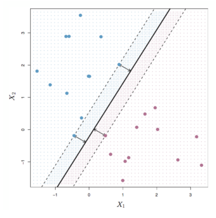
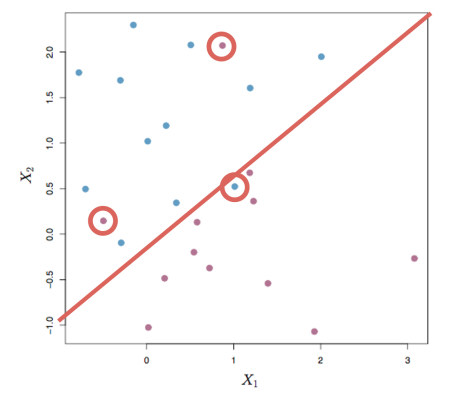
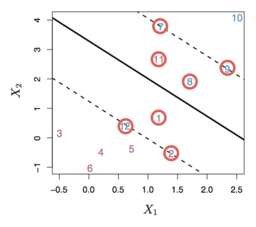
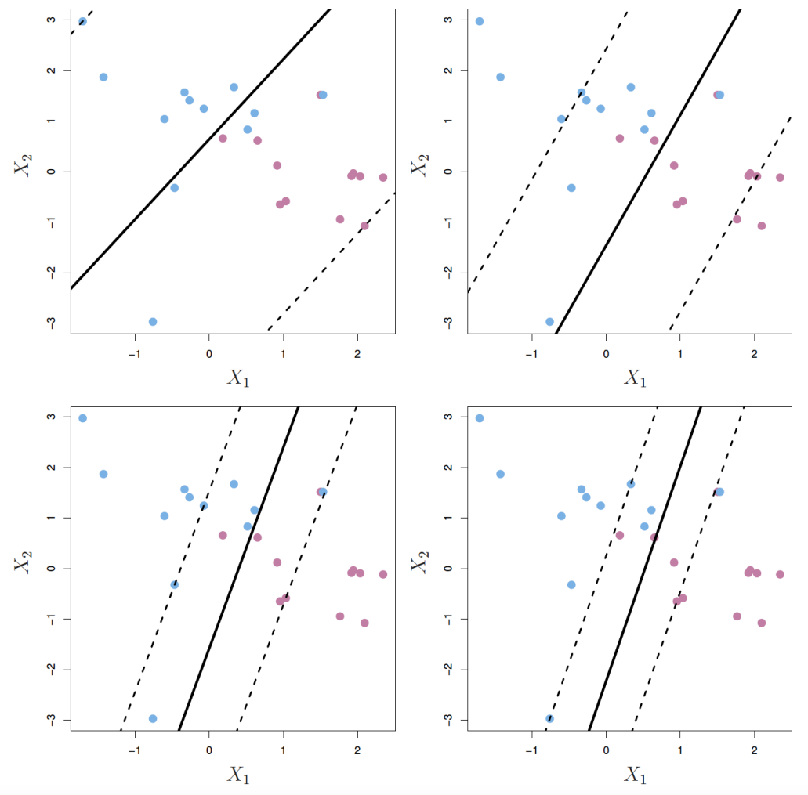
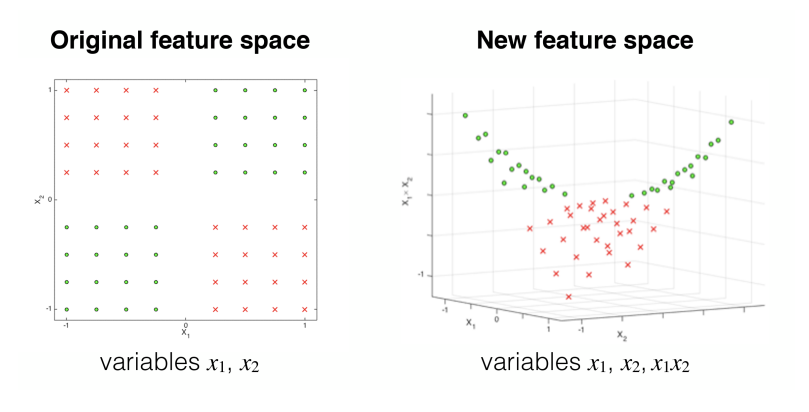
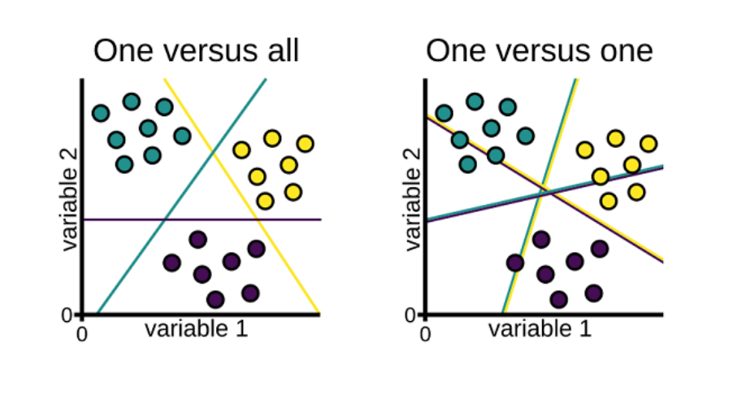
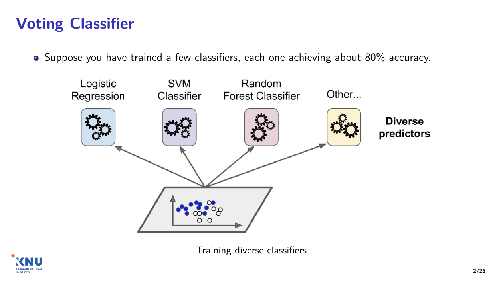
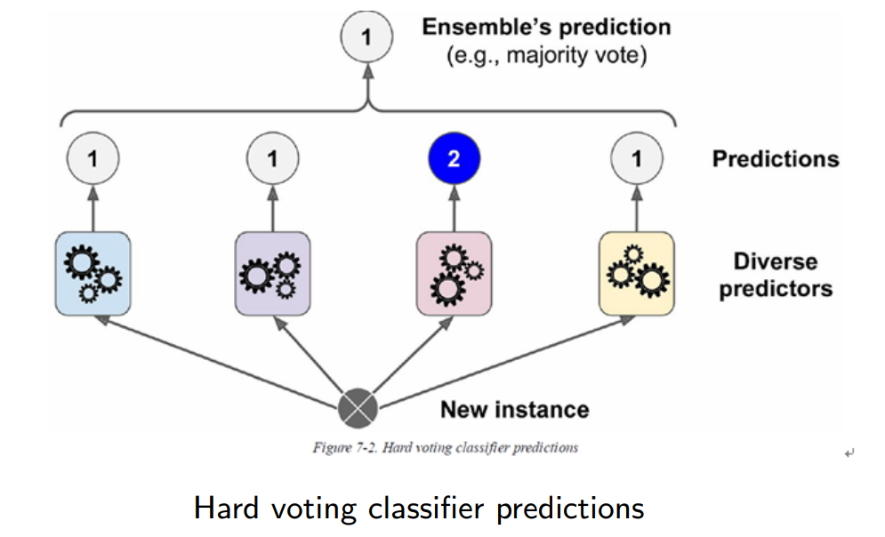
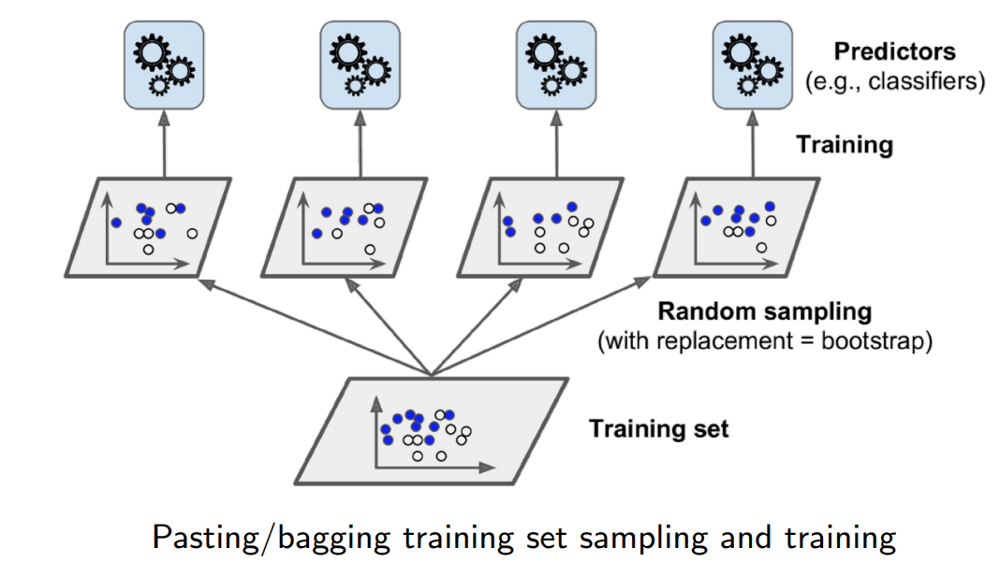
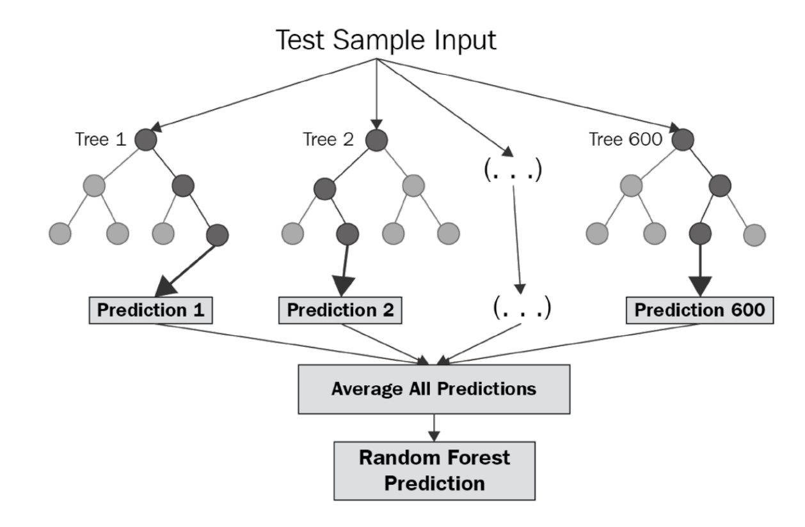

교수님이 짚어 주신 쪽만,
처음부터 이해하기
시험 형식과 이 자료의 기준
- 20문항 × 5점 = 100점, 문항마다 부분점수 있음(어려운 문제도 5점)
- 유형: OX, 4지선다, 모두 고르시오(이것은 부분점수 없음), 주관식(답이 정해진 단답)
- 서술형 없음, 수식·계산 문제 없음 → 개념 위주
- 영어 표현이 나올 수 있음 — 영어 키워드를 함께 외우기
범위는 교수님이 만든 영문 교안 6개이고, 그중 교수님이 말한 쪽만 나옵니다. 말하지 않은 쪽은 나오지 않습니다.
규칙기반 인공지능, 인공지능을 위한 기초 수학과 프로그래밍(교재 교안)은 범위가 아닙니다.
쪽 번호는 교안 하단 번호입니다. 각 장 오른쪽 위 교안 버튼을 누르면 그 쪽이 열립니다. ★ 교수님 강조는 "나올 것 같다·외우라"고 하신 곳, 범위 밖 · 이해용은 이해를 위해서만 넣은 곳입니다.
범위 한눈에 보기 — 여섯 장, 나오는 쪽
| 장 | 나오는 쪽 (하단 번호) | 안 나옴 |
|---|---|---|
| A 기계학습 입문 Introduction to ML | 1, 4, 9, 12, 14, 24–27 | 16 차원 축소, 강화학습 |
| B 회귀 Regression | 3–5, 7, 12, 13, 23–25 | 18 수정 결정계수, 19 계수 해석, 풀이 수식(LSE) |
| C SVM Support Vector Machine | 2, 7, 14, 15, 18, 19, 25, 28, 32 | 8·29 수식, 11 스케일링, 33 SVR |
| D 군집화 Clustering | 2–4, 6, 8, 10–16, 18–20, 22, 23, 25, 26 | 24 연결 방식 종류 등 말하지 않은 쪽 |
| E 결정 트리 Decision Tree | 3, 5–7, 16, 17, 28, 29, 33 | 지니·엔트로피 계산 |
| F 앙상블 Ensemble Learning | 1–3, 5–7, 10–12, 14 | 페이스팅, 스태킹(25), 부스팅 세부(AdaBoost 등) |
장마다 끝에 장 정리와 확인 문제(시험 유형 그대로, 정답은 눌러야 보임)가 있습니다. 순서대로 A → F로 읽으면 됩니다 — 뒤 장이 앞 장의 용어(지도·비지도학습, 과적합)를 씁니다.
기계학습 입문 Introduction to Machine Learning
이 장에서 시험에 나오는 것
| 쪽 | 내용 | 교수님 말씀 (요약) |
|---|---|---|
| 1 | AI ⊃ ML ⊃ DL 포함 관계 그림 | 그림이 나올 것 같음 — 관계성, 포함 범위 |
| 4 | 전통적 방식 vs ML 방식 | 규칙 기반 vs 데이터로 학습해 패턴을 찾음. 그림이 나올 것 같음 |
| 9 | 학습 유형 Types of Learning | x → 모델 → y. 지도(y 있음: 이산 라벨·실수값) / 비지도(y 없음: k-means, DBSCAN) |
| 12 | 지도 학습 알고리즘 | 어떤 문제를 푸는지 |
| 14 | 비지도 학습: 군집화 | 클러스터링 |
| 24 | 기계학습의 주요 어려움 | 데이터 양·대표성·품질, 관련 없는 특징 |
| 25 | 과적합 Overfitting | 학습 데이터에 너무 맞춤 ↔ 일반화·강건(robust) |
| 26 | 과소적합 Underfitting | 파라미터 부족 → 모델을 깊게·크게 |
| 27 | 과적합 vs 과소적합 손실 그래프 | 손실이 줄면 학습이 잘 되는 것. 손실 = 실제값과 예측값의 차이 |
안 나옴 — 16쪽 차원 축소(교수님: "안 배움, 안 나옴") · 강화 학습("다루지 않음") · 말하지 않은 쪽 · 규칙기반 AI 교재 교안(명제논리·탐색·전문가 시스템)
세 용어는 포함 관계입니다 ★ 교수님 강조
 다시 그린 그림 · 누르면 원본
다시 그린 그림 · 누르면 원본가장 큰 원이 인공지능, 그 안의 원이 기계학습, 가장 안쪽 원이 딥러닝입니다. 원이 다른 원 안에 완전히 들어 있으므로 딥러닝은 모두 기계학습이고, 기계학습은 모두 인공지능입니다. 거꾸로는 성립하지 않습니다.
그림 오른쪽의 세 정의
| 원 | 교안 정의 (번역) |
|---|---|
| 인공지능 Artificial Intelligence | 사람이 하던 일을 기계가 수행하는 모든 자동화 Any automation in which machines can perform tasks that humans would otherwise do |
| 기계학습 Machine Learning | 규칙을 명시적으로 프로그래밍하지 않아도 기계가 데이터에서 의사결정용 패턴을 학습 Machines learn patterns for decision-making from data without being explicitly programmed with rules |
| 딥러닝 Deep Learning | 신경망 기반 모델로, 비정형 데이터에서 특징 추출과 의사결정을 처음부터 끝까지 한 번에(end to end) 수행 Neural network-based models that can perform both feature extraction and decision-making end to end from unstructured data |
1쪽 그림은 시험에 나올 것 같습니다. 세 영역의 관계성과 포함 범위를 알아 두세요.
생성형 AIGenerative AI는 딥러닝 안에 들어가는 영역입니다. → AI ⊃ ML ⊃ DL ⊃ 생성형 AI
구분 기준: 규칙을 사람이 적으면 인공지능이지만 기계학습은 아님 · 데이터에서 찾으면 기계학습 · 신경망이 특징까지 스스로 뽑으면 딥러닝. 비정형 데이터 = 표 형태가 아닌 이미지·음성·텍스트. 포함 관계는 이산수학의 부분집합(⊂)과 같습니다.
전통적 방식 vs 기계학습 방식 ★ 교수님 강조
 다시 그린 그림 · 누르면 원본
다시 그린 그림 · 누르면 원본두 순서도는 모양이 같고 가운데 칸 하나만 다릅니다. 왼쪽은 규칙 작성Write rules, 오른쪽은 ML 알고리즘 학습Train ML algorithm이며, 오른쪽에만 위에서 데이터Data가 들어옵니다.
순서도를 칸마다 읽기
| 칸 | 전통적 방식 Traditional | ML 방식 ML approach |
|---|---|---|
| ① 문제 연구 Study the problem | 같음 | 같음 |
| ② 가운데 칸 | 사람이 규칙을 작성 | 데이터로 알고리즘을 학습 |
| ③ 평가 Evaluate | 규칙을 평가 | 학습된 해법을 평가 Evaluate solution |
| ④ 😊 → 출시 | 평가가 좋으면 출시합니다 Launch! | |
| ⑤ ☹ → 오류 분석 | 나쁘면 오류를 분석Analyze errors하고 ①로 돌아갑니다 | |
결국 규칙(패턴)을 만드는 주체가 사람에서 학습 알고리즘으로 바뀐 것입니다.
기존의 전통적인 방식이 규칙 기반이었다면, 기계학습은 데이터를 주고 학습을 시킵니다. 학습이 곧 패턴을 찾아내는 것입니다.
찾은 패턴으로 내가 원하는 작업task을 합니다. 분류를 할지, 회귀를 할지에 맞게 패턴을 학습합니다.
이 그림도 시험에 나올 것 같습니다.
학습 유형 Types of Learning
| 유형 | 학습 데이터 | 교안 문장 (번역) |
|---|---|---|
| 지도 학습 Supervised Learning | {(xt, yt)} | 관측값 x와 함께 목표 출력 y가 주어진다 · 분류Classification: 이산적 라벨 discrete label · 회귀Regression: 연속적인 수 continuous number |
| 비지도 학습 Unsupervised Learning | {xt} | 목표 출력이 주어지지 않는다 — x만 있음 |
| 강화 학습 Reinforcement Learning | 정답 없음 + 보상 | 지도 출력은 없고 지연된 보상 delayed reward이 있다 — 수업에서 다루지 않음 |
표기: 위첨자 t는 "t번째 데이터"라는 번호입니다. {(xt, yt)}는 (입력, 정답) 쌍들을 모은 집합입니다(이산수학의 순서쌍 집합).
핵심은 "정답 y가 주어지는가"
지도 학습 — 입력 x와 정답 y가 함께 있습니다. y가 정해진 종류 중 하나(0/1, 스팸/정상)이면 분류, 실수값(집값, 온도 (보충))이면 회귀입니다.
비지도 학습 — y가 없습니다. 정답을 맞히는 대신 데이터 자체의 구조(비슷한 것끼리의 무리)를 찾습니다.
"이산(discrete)"은 이산수학의 그 이산입니다. 값이 0, 1처럼 떨어져 있어 중간값이 의미가 없습니다. 연속(continuous)은 3.5처럼 사이 값도 모두 의미가 있습니다.
학습은 x가 들어와서 어떤 함수(모델)를 거치면 y가 나오는 것입니다. 학습에는 여러 종류가 있습니다.
지도 학습은 y에 대한 정보를 함께 받아 학습합니다. 이산 라벨은 0, 1 같은 값이고, 회귀는 실수값을 예측합니다.
비지도 학습은 지도가 없는, 즉 y가 없는 학습입니다. 군집화의 k-means, DBSCAN 등이 여기에 해당합니다.
강화 학습은 이 수업에서 다루지 않습니다.
지도 학습 알고리즘 Supervised Learning Algorithms
| 교안 목록 | 이 시험에서 다시 나오는 곳 |
|---|---|
| 선형 회귀 Linear regression | B 회귀 — 실수값 예측 |
| 로지스틱 회귀 Logistic regression | B 회귀 — 이름은 회귀지만 분류에 씀 |
| k-최근접 이웃 k-Nearest neighbors | — |
| 결정 트리와 랜덤 포레스트 Decision trees and random forests | E 결정 트리, F 앙상블 |
| 서포트 벡터 머신 Support vector machines | C SVM |
| 신경망 Neural networks, 그 외 etc. | — |
12쪽은 지도 학습으로 어떤 문제를 푸는지 보는 쪽입니다.
모두 정답 y가 있는 데이터로 학습하는 알고리즘입니다. 이 시험의 B·C·E·F 장이 이 목록에서 나옵니다.
오른쪽 열은 다른 장과의 연결로 덧붙인 것입니다(보충).
비지도 학습: 군집화 Clustering
A cluster can be defined as a collection of objects which are "similar" between them and are "dissimilar" to the objects belonging to other clusters.
군집cluster은 서로 "비슷한" 객체들의 모임이며, 다른 군집에 속한 객체와는 "비슷하지 않은" 모임입니다.
그림 읽기 — 가로축 특징 1Feature 1, 세로축 특징 2Feature 2. 사람 아이콘 하나가 샘플 하나이며 라벨이 없습니다(교안 원본은 모두 같은 아이콘). 알고리즘은 위치(거리)만 보고 점선으로 4개 군집을 나눴습니다. 다시 그린 그림의 색은 결과 군집입니다.
14쪽은 클러스터링입니다.
9쪽에서 말씀하신 k-means, DBSCAN이 군집화 방법입니다 → D 군집화
 다시 그린 그림 · 누르면 원본
다시 그린 그림 · 누르면 원본기계학습의 주요 어려움 Main Challenges of Machine Learning
| 교안 | 뜻 |
|---|---|
| 학습 데이터의 양이 부족 Insufficient quantity of training data | 데이터가 적으면 의미 있는 패턴을 찾기 어렵습니다. |
| 대표성 없는 학습 데이터 Nonrepresentative training data Sampling noise, sampling bias | 학습 데이터가 실제로 예측할 데이터를 잘 대표하지 못함. (보충) 표본 잡음 = 표본이 작아 우연히 치우침, 표본 편향 = 뽑는 방법 자체가 치우침 |
| 품질이 낮은 데이터 Poor quality data | 오류·이상치·잡음errors, outliers, noise이 가득함 |
| 관련 없는 특징 Irrelevant features | 특징 선택Feature selection: 찾는 패턴에 실제로 기여하는 특징만 고름 특징 추출Feature extraction: 기존 특징을 결합해 더 유용한 특징을 만듦 |
24쪽은 기계학습에서 학습을 하는 데 생기는 어려움입니다.
학습 데이터가 충분해야 의미 있는 결과가 나옵니다. 학습 데이터가 대표성이 없으면 학습에 문제가 됩니다.
데이터 품질quality 문제도 있고, 관련 없는 특징들도 어려움입니다.
과적합 Overfitting
Overfitting happens when the model is too complex relative to the amount and noise of the training data.
과적합은 모델이 학습 데이터의 양과 잡음에 비해 너무 복잡할 때 일어납니다.
해결 방법 possible solutions
- 모델을 단순하게 — 파라미터가 더 적은 모델을 고르기, 학습 데이터의 속성attributes 수 줄이기, 모델에 제약 주기 = 규제regularization
- 학습 데이터를 더 모으기 gather more training data
- 학습 데이터의 잡음 줄이기 reduce the noise
데이터는 학습 데이터training data와 테스트 데이터test data로 나뉘고, 학습은 학습 데이터로 해야 합니다.
그런데 학습 데이터에 너무 맞추면, 일반적인 테스트 데이터가 들어왔을 때 성능이 떨어지기도 합니다. 이것이 과적합(오버피팅)입니다.
반대로 어떤 데이터가 들어와도 잘 맞게 만들면 일반화가 잘 된다generalization, 또는 모델이 강건하다robust라고 표현합니다.
과적합을 정확히 이해하기
"너무 복잡하다" — 파라미터가 많은 모델은 학습 데이터의 진짜 패턴뿐 아니라 잡음(우연한 오차)까지 외울 수 있습니다. 그러면 학습 데이터에서는 거의 다 맞히지만, 잡음이 다른 새 데이터에서는 틀립니다.
그래서 해결책이 세 방향입니다. 모델의 복잡도를 낮추거나, 외우기 어렵게 데이터를 늘리거나, 외울 잡음을 줄입니다.
(보충) 일반화는 "학습에 쓰지 않은 새 데이터에서도 잘 동작하는 것"이며, 새 데이터가 학습 데이터와 같은 종류일 때를 말합니다.
| 학습 데이터 | 테스트 데이터 | |
|---|---|---|
| 과적합 | 성능 높음 | 성능 떨어짐 |
| 일반화가 잘 됨 | 성능 높음 | 성능 높음 |
주관식 철자: Overfitting(과적합) · Generalization(일반화) · Robust(강건한). C SVM에서 C를 크게 잡으면 과적합될 수 있다는 내용이 다시 나옵니다.
필기에는 "tranning data"라고 적혔지만 교안 철자는 training data입니다.
과소적합 Underfitting
Underfitting is the opposite of overfitting: it occurs when your model is too simple to learn the underlying structure of the data.
과소적합은 과적합의 반대입니다. 모델이 너무 단순해서 데이터에 깔린 구조를 학습하지 못할 때 일어납니다.
해결 방법 main options
- 더 강력한 모델 고르기 — 파라미터가 더 많은 모델 more parameters
- 학습 알고리즘에 더 좋은 특징 넣기 = 특징 공학feature engineering
- 모델의 제약 줄이기 reducing the constraints
과소적합(언더피팅)은 과적합의 반대입니다. 모델의 파라미터가 충분히 많지 않아서 학습을 아무리 해도 더 복잡한 것을 학습하지 못합니다. 그래서 모델을 더 깊게 만들거나 더 크게 만들어야 합니다.
| 과적합 | 과소적합 | |
|---|---|---|
| 모델 | 너무 복잡 | 너무 단순 |
| 학습 데이터 | 잘 맞음 | 못 맞춤 |
| 테스트 데이터 | 못 맞춤 | 못 맞춤 |
| 제약(규제) | 늘린다 | 줄인다 |
과적합 vs 과소적합 Overfitting vs. Underfitting
가로축은 학습 시간, 세로축은 손실loss입니다. 손실은 작을수록 좋습니다.
검은 선(학습 손실)은 학습할수록 계속 줄어듭니다.
빨간 선(테스트 손실)은 처음엔 같이 줄다가, 어느 지점부터 다시 올라갑니다.
테스트 손실이 가장 낮은 지점(빨간 점)의 왼쪽(파란 구간)은 아직 덜 배운 과소적합, 오른쪽(주황 구간)은 학습 데이터에 너무 맞춘 과적합입니다.
손실 그래프에서 꼭 볼 점
학습이 잘 되었는지는 그림의 선으로 볼 수 있습니다. 성능이 높아진다는 것은 손실(로스)이 줄어든다는 뜻이고, 손실이 줄면 학습이 잘 되고 있는 것입니다.
손실은 실제값과 예측값의 차이입니다.
B 회귀에서 실제값과 예측값의 차이(오차)를 다시 봅니다.
| 구간 | 학습 손실 | 테스트 손실 |
|---|---|---|
| 과소적합 (왼쪽) | 높음 → 줄어드는 중 | 높음 → 줄어드는 중 |
| 경계 | 낮음 | 가장 낮음 |
| 과적합 (오른쪽) | 계속 줄어듦 | 다시 커짐 |
과적합 구간에서도 학습 손실은 계속 줄어듭니다. 그래서 학습 손실만 보면 과적합을 알 수 없고, 테스트 손실이 다시 커지는지를 봐야 합니다.
A 장 정리 — 시험 직전에 볼 것
- AI ⊃ 기계학습 ⊃ 딥러닝 (⊃ 생성형 AI). ML = 규칙 없이 데이터에서 패턴 학습, DL = 신경망이 특징 추출과 의사결정을 end to end.
- 전통적 방식 = 사람이 규칙 작성(Write rules) · ML 방식 = 데이터로 알고리즘 학습(Train ML algorithm). 나머지 순서도는 같음.
- x → g(x) → y. 지도 {(xt, yt)}: 분류 = 이산 라벨, 회귀 = 연속 수(실수) · 비지도 {xt}: 군집화(k-means, DBSCAN) · 강화 학습은 안 다룸.
- 지도 학습 알고리즘: 선형·로지스틱 회귀, k-NN, 결정 트리·랜덤 포레스트, SVM, 신경망.
- 어려움: 데이터 양 부족 · 대표성 없음(sampling noise·bias) · 품질 낮음 · 관련 없는 특징(특징 선택·추출).
- Overfitting = 학습 데이터 양·잡음에 비해 모델이 너무 복잡 → 단순화·규제, 데이터 추가, 잡음 감소. 반대말 = 일반화·강건(robust).
- Underfitting = 모델이 너무 단순 → 파라미터 많은 모델, 특징 공학, 제약 줄이기.
- 손실 = 실제값과 예측값의 차이. 학습 손실은 계속 줄고, 테스트 손실이 다시 커지면 과적합.
- 문제 연구 (Study the problem)
- 사람의 규칙 작성 ↔ 데이터로 알고리즘 학습
- 평가 후 좋으면 출시 (Launch)
- 평가가 나쁘면 오류 분석 (Analyze errors)
- 학습 데이터에 목표 출력 y가 없고 x만 주어진다.
- Clustering(군집화)은 비지도 학습에 해당한다.
- 연속적인 실수값을 예측하는 Regression(회귀)이 대표적이다.
- k-means와 DBSCAN은 비지도 학습 방법이다.
- 정상/스팸 라벨이 붙은 메일로 새 메일을 분류한다.
- 파라미터가 더 적은 모델을 고른다.
- 학습 데이터를 더 모은다.
- 학습 데이터의 잡음을 줄인다.
- 모델에 걸린 제약을 줄인다.
- Regularization(규제)으로 모델을 제약한다.
회귀 Regression
이 장에서 시험에 나오는 것
| 교안 쪽 | 내용 | 교수님 말씀 (10/26 요약) |
|---|---|---|
| 3, 4 | 용어 · 회귀의 정의 | X와 Y의 관계를 선형으로 나타낸다. 회귀의 정의를 봐 둘 것 |
| 5 | 회귀의 분류 (단순·다중 × 선형·비선형) | 단순 회귀·다중 회귀의 정의를 알아 둘 것 ★ |
| 7 | 단순 선형 회귀 | 단순 회귀는 x가 하나. 푸는 수식은 내지 않음 |
| 12 | 결정계수 R²의 정의 | 잘 봐야 함 ★. 식을 외우기보다 13쪽 그래프로 이해 |
| 13 | SST · SSR · SSE 그래프 | ȳ, ŷ, SST, SSR, SSE의 뜻. R²는 1에 가까울수록 좋음 ★ |
| 23 | 선형 회귀 vs 로지스틱 회귀 | 선형은 실수값 예측, 로지스틱은 분류 문제로 가져감 |
| 24, 25 | 로지스틱 회귀 · 시그모이드 함수 | β₀ + β₁x를 시그모이드에 넣음. 보통 0.5 기준으로 0 또는 1로 분류 |
안 나옴(교수님): 18쪽 수정된 결정계수(Adjusted R²) · 19쪽 회귀계수 해석 · 최소제곱 풀이 수식(LSE 유도·계산). 말하지 않은 6, 8–11, 14–17, 20–22, 26–27쪽도 범위 밖입니다.
용어 — x → 모델 → y Terminology
x → system(model) → y
입력 x를 모델에 넣으면 출력 y가 나오는 형식입니다.
같은 대상을 분야마다 다른 이름으로 부릅니다. 표의 왼쪽 열은 모두 입력 x, 오른쪽 열은 모두 출력 y입니다.
회귀는 A 기계학습 입문에서 본 지도학습(입력 x와 정답 y가 함께 있음)에 속합니다.
| 독립변수Independent variable x, xi, X, X | 종속변수Dependent variable y, yi, Y, Y |
|---|---|
| Input — 입력 | Output — 출력 |
| Feature — 특징 | Target — 타깃(목표값) |
| Attribute — 속성 | Label — 라벨 |
| Predictor — 예측변수 | Response — 반응변수 |
| Risk factor — 위험 요인 | Class — 클래스(범주) |
| Outcome — 결과 |
회귀란 What is Regression? ★ 교수님 강조
Linear Regression Model represents the output variable Y as a linear combination of the input variables X.
선형 회귀 모델Linear Regression Model은 출력 변수 Y를 입력 변수 X들의 선형 결합linear combination으로 나타냅니다.
Linear combination is a form where several variables are multiplied by coefficients and then added together.
선형 결합은 여러 변수에 각각 계수coefficient를 곱한 뒤 더한 형태입니다. (보충) 예: 3 × TV + 0.5 × Radio + 7
- X와 Y의 관계를 수학식으로 설명한다 Explain the relationship
- 반응 변수 Y의 미래 값을 예측한다 Predict the future value
출력 변수 Y를 낼 때 X와 Y의 관계를 어떻게 나타낼 것인가 — 선형으로 나타냅니다. 회귀의 정의를 봐 둬야 합니다.
이 수업의 회귀에는 선형 회귀와 로지스틱 회귀가 있습니다. 로지스틱은 B6에서 봅니다.
회귀의 분류 Category of Regression ★ 교수님 강조
| 이름 | 교안 정의 | 뜻 |
|---|---|---|
| 단순 회귀 Simple regression | regression with a single independent variable | 독립변수(x)가 1개인 회귀 |
| 다중 회귀 Multiple regression | regression with two or more independent variables | 독립변수(x)가 2개 이상인 회귀 |
 다시 그린 그림 · 누르면 원본
다시 그린 그림 · 누르면 원본두 기준으로 나눈 네 칸 — 그림 읽기
| 선형 Linear | 비선형 Nonlinear | |
|---|---|---|
| 단순 x 1개 | 직선 y = b0 + b1x | 곡선 (다항 모델) y = b0 + b1x + b2x2 |
| 다중 x 2개 이상 | 평면 (x₁, x₂, y의 3차원) | 곡면 |
- 단순 ↔ 다중: 독립변수 x의 개수로 나눕니다.
- 선형 ↔ 비선형: 맞추는 모양이 곧은가(직선·평면) 휘었는가(곡선·곡면)로 나눕니다.
- 다항 모델은 x²이 있어도 x는 하나이므로 단순 회귀입니다.
교안 원본 그림의 다항 모델 식은 b₂x₁²로 적혀 있지만 x가 하나뿐이므로 x²을 뜻합니다. 다시 그린 그림은 x²로 고쳤습니다.
선형과 비선형이 있습니다(그림 참고). 단순 회귀와 다중 회귀의 정의는 알아 둬야 할 것 같습니다.
단순 회귀의 입력은 x 하나, 다중 회귀의 입력은 x = [x1, x2, …, xN]입니다. 비선형 회귀는 훑어만 보고, 수업은 선형만 다룹니다.
맞추는 대상: 선 → 면 → 초평면hyperplane(x가 3개 이상)
단순 선형 회귀 Simple Linear Regression
We assume a model Y = β₀ + β₁X + ε, where β₀ and β₁ are two unknown constants that represent the intercept and slope, also known as coefficients or parameters, and ε is the error term.
다음 모델을 가정합니다. β₀, β₁은 절편과 기울기를 나타내는 모르는 두 상수이고 계수 또는 파라미터라고도 부릅니다. ε는 오차항입니다.
Y = β0 + β1X + ε
| β0 | 절편intercept — X = 0일 때 Y의 값 |
| β1 | 기울기slope — X가 1 늘 때 Y가 변하는 양 |
| ε | 오차항error term — 직선으로 설명되지 않는 나머지 |
단순 회귀는 x가 하나 들어온 것입니다. 어떻게 푸는지 같은 수식은 내지 않습니다.
y = ax + b와 맞춰 보면 β₁ = a(기울기), β₀ = b(절편)입니다. β₀, β₁은 parameter, learnable parameter, weight(가중치)라고도 부릅니다.
햇(^)은 추정값 — 무엇을 가지고, 무엇을 찾나
Given some estimates β̂₀ and β̂₁ for the model coefficients, we predict future sales using ŷ = β̂₀ + β̂₁x. The hat symbol denotes an estimated value.
계수의 추정값 β̂₀, β̂₁이 있으면 다음 식으로 예측합니다. 햇(hat) 기호는 추정한 값을 뜻합니다.
ŷ = β̂0 + β̂1x
ŷ는 X = x일 때 Y의 예측값입니다. y는 실제값, ŷ는 모델의 예측값입니다. 이 구분이 B5의 SSE·SSR에서 그대로 쓰입니다.
| 구분 | 무엇 |
|---|---|
| 가지고 있는 것 | 데이터 (x₁, y₁), …, (xₙ, yₙ) |
| 찾는 것 (학습) | β₀, β₁의 추정값 β̂₀, β̂₁ |
| 내는 것 | 새 x에 대한 예측값 ŷ |
선형 회귀를 만든다는 것은 결국 β₀과 β₁을 찾는 것입니다. 햇 기호는 예측하는 값입니다.
잔차 — SSE를 읽기 위한 준비 범위 밖 · 이해용
 다시 그린 그림 · 누르면 원본
다시 그린 그림 · 누르면 원본점 하나하나는 실제 데이터 (xᵢ, yᵢ), 직선은 회귀선 ŷ입니다.
회색 세로선은 실제값과 예측값의 차이인 잔차residual입니다.
ei = yi − ŷi
잔차는 +도 −도 나오므로 제곱해서 더합니다. 이 제곱합을 가장 작게 만드는 직선을 고르는 방법이 최소제곱법least squares입니다.
이 잔차 제곱합이 다음 쪽의 SSE입니다. 최소제곱 풀이 과정(8–11쪽)은 시험에 나오지 않습니다.
결정계수 R² Coefficient of Determination ★ 교수님 강조
A measure of how well the regression model explains the variation in the data.
회귀 모델이 데이터의 변동variation을 얼마나 잘 설명하는지 나타내는 척도입니다.
Indicates the proportion of the total variance in y explained by the model.
y의 전체 분산 중 모델이 설명하는 비율입니다.
Range: 0 ≤ R² ≤ 1 (sometimes negative if the model is very poor).
범위는 0 이상 1 이하입니다(모델이 매우 나쁘면 음수가 되기도 함).
R² = 1: 잘 맞음 Good fit · R² = 0: 못 맞춤 Poor fit
R2 = 1 − SSESST = SSRSST
식의 뜻: 전체 변동(SST) 중 설명하지 못한 몫(SSE)을 뺀 나머지, 곧 설명한 몫(SSR)의 비율입니다. 계산은 나오지 않습니다.
결정계수는 잘 봐야 합니다. 회귀 모델이 데이터의 변동을 얼마나 잘 설명하는지에 대한 측정값입니다. 식을 외우기보다 13쪽 그래프로 이해하세요.
13쪽 그래프 읽기 — 점 하나의 세 거리 ★ 교수님 강조
 다시 그린 그림 · 누르면 원본
다시 그린 그림 · 누르면 원본| 그림 요소 | 뜻 |
|---|---|
| 가로선 ȳ | y의 평균(y바). x와 상관없이 평균으로 예측하는 선 |
| 기울어진 선 ŷ | 내가 만든 선형 회귀 모델의 예측(y햇) |
| 점 yᵢ | 실제값(정답) |
| SST 구간 | ȳ → yᵢ : 평균에서 정답까지 |
| SSR 구간 | ȳ → ŷᵢ : 평균에서 예측까지 |
| SSE 구간 | ŷᵢ → yᵢ : 예측에서 정답까지(틀린 정도) |
세 구간을 모든 점에 대해 제곱해서 더한 것이 SST, SSR, SSE입니다. 그림에서 SST 구간 = SSR 구간 + SSE 구간입니다.
SST = SSR + SSE ★ 교수님 강조
- ȳ(y바)는 y의 평균값, ŷ(y햇)은 내가 예측한 선형 회귀 모델입니다.
- SST: 평균에서 내가 가고자 하는 정답까지의 거리
- SSR: 평균보다 내 예측값이 얼마나 잘 가고 있는지
- SSE: 반면에 예측값이 틀린 정도
- SSR이 높아져야 합니다. 결정계수는 1에 가까울수록 좋습니다.
| 이름 | 식 | 뜻 |
|---|---|---|
| SST Total Sum of Squares | ∑(yi − ȳ)2 | y의 전체 변동 |
| SSR Regression Sum of Squares | ∑(ŷi − ȳ)2 | 모델이 설명한 변동 |
| SSE Error Sum of Squares | ∑(yi − ŷi)2 | 모델이 설명하지 못한 변동 |
SST는 데이터가 정하므로 고정입니다. 좋은 모델일수록 SST 중 SSR 몫이 커지고 SSE 몫이 작아져 R²가 1에 가까워집니다.
R² 값 읽기
| R² 값 | 그림에서 | 뜻 |
|---|---|---|
| 1 | SSE = 0, 모든 점이 회귀선 위 | 다 맞춤 |
| 1에 가까움 | SSE가 작고 SSR이 큼 | 좋음 — 변동을 잘 설명 |
| 0 | SSR = 0, 예측이 평균 ȳ와 같음 | 평균값으로 맞추는 수준, 못 맞춤 |
| 음수 | SSE가 SST보다 큼 | 평균으로 예측하는 것보다도 못함 |
필기에는 "−1이면 평균보다도 못 맞춘다"고 적혔지만, 정확히는 R²가 음수이면 평균보다 못한 것입니다. −1이 하한이 아니며 더 작아질 수 있습니다.
절편이 있는 선형 회귀를 학습 데이터에 최소제곱으로 맞추면 SST = SSR + SSE가 성립하고 0 ≤ R² ≤ 1입니다. 음수는 평균보다 나쁜 모델(예: 새 데이터에 적용)에서 R² = 1 − SSESST로 잴 때 나옵니다.
주관식 철자 주의: 필기의 "회기"는 회귀(Regression)의 오기입니다. 결정계수(Coefficient of Determination)도 함께 외워 두세요.
선형 회귀 vs 로지스틱 회귀 Linear vs. Logistic Regression
 다시 그린 그림 · 누르면 원본
다시 그린 그림 · 누르면 원본그림: 가로축은 카드 잔액(Balance), 세로축은 채무불이행 확률. 주황 눈금은 실제 관측으로, 불이행 안 함은 0, 불이행은 1 위치에 찍혀 있습니다. 왼쪽 직선은 0 아래로 내려가고 1 근처에 닿지 못합니다. 오른쪽 S자 곡선은 항상 0과 1 사이에 있습니다.
선형 회귀는 값(실수값, 연속적인 값, 무수히 많은 값)을 예측합니다. 로지스틱 회귀는 이것을 분류 문제로 가져갑니다.
로지스틱 회귀 Logistic Regression
Let's write p(X) = Pr(Y = 1 | X) for short and consider using balance to predict default.
p(X)는 Y = 1일 확률을 줄여 쓴 것입니다. 카드 잔액(balance)으로 채무불이행(default)을 예측합니다.
p(X) = eβ0 + β1X1 + eβ0 + β1X = 11 + e−(β0 + β1X)
식의 뜻: 지수 자리의 β₀ + β₁X는 선형 회귀와 같은 직선입니다. 그 값을 함수에 넣어 0과 1 사이 값(p(X) will have values between 0 and 1)으로 바꿉니다.
교안은 식을 정리한 log(p(X) ÷ (1 − p(X))) = β₀ + β₁X를 로그 오즈log odds · logit 변환이라고 부릅니다. p(X)는 y가 1일 확률, 1 − p(X)는 y가 0일 확률입니다(수업 중).
선형 회귀에서 봤던 β0 + β1x를 함수에 넣은 것입니다. 그 함수가 25쪽의 시그모이드 함수입니다.
시그모이드 함수와 0.5 기준 Sigmoid Function
φ(z) = 11 + e−z
- 그림: 가로축 z, 세로축 φ(z)인 S자 곡선입니다.
- z = 0이면 정확히 0.5, z가 커지면 1에, 작아지면 0에 가까워집니다.
- 어떤 실수든 0과 1 사이로 바꿉니다. 로지스틱 회귀는 z 자리에 β₀ + β₁X를 넣습니다.
시그모이드 값이 가까운 쪽으로 0 또는 1로 분류합니다. 일반적으로 0.5를 기준으로 나눕니다. 특별한 말이 없으면 0.5이고, 규정에 따라 바꾸기도 합니다. 예를 들어 병원에서 환자를 분류할 때 민감도를 높이려는 경우입니다.
 다시 그린 그림 · 누르면 원본
다시 그린 그림 · 누르면 원본B 회귀 — 시험 직전 핵심
- 회귀: 출력 Y를 입력 X들의 선형 결합(linear combination)으로 나타냅니다. 목적은 관계 설명과 미래 값 예측입니다.
- Simple regression(단순 회귀) = x 1개, Multiple regression(다중 회귀) = x 2개 이상입니다. 선형·비선형은 모양(직선·평면 ↔ 곡선·곡면)으로 나눕니다.
- 단순 선형 회귀 Y = β₀ + β₁X + ε. β₀ 절편, β₁ 기울기(= 계수, 파라미터), ε 오차항입니다. 햇(^) = 추정값.
- 결정계수 R²: 모델이 데이터의 변동을 얼마나 잘 설명하는지 나타냅니다. 1에 가까울수록 좋고, 0이면 평균 수준, 음수면 평균보다 못합니다.
- ȳ 평균 · ŷ 예측. SST 평균→정답(전체), SSR 평균→예측(설명됨), SSE 예측→정답(틀린 정도). SST = SSR + SSE입니다.
- 선형 회귀는 실수값 예측, 로지스틱 회귀는 분류. β₀ + β₁x를 시그모이드에 넣어 0~1 확률로 바꿉니다.
- 보통 0.5 기준으로 0 또는 1로 분류합니다. 기준은 바꿀 수 있습니다(예: 병원에서 민감도를 높일 때).
- 모든 데이터를 정확히 맞춘다.
- 평균 ȳ로 예측하는 것과 같은 수준이다.
- 평균으로 예측하는 것보다 반드시 못하다.
- SSE가 0이다.
- ㄱ. SST는 실제값 yᵢ와 평균 ȳ의 차이로 만든 값으로, y의 전체 변동이다.
- ㄴ. SSE는 예측값 ŷᵢ와 평균 ȳ의 차이로 만든 값이다.
- ㄷ. 좋은 모델일수록 SST 중 SSR이 차지하는 몫이 커진다.
- ㄹ. 모델이 매우 나쁘면 R²가 음수가 될 수 있다.
- ㅁ. R²가 가질 수 있는 가장 작은 값은 −1이다.
- 이름에 회귀가 들어가지만 분류 문제에 쓴다.
- 출력 p(X)는 항상 0과 1 사이이다.
- 특별한 말이 없으면 0.5를 기준으로 0 또는 1로 나눈다.
- 분류 기준값은 0.5로 고정되어 있어 바꿀 수 없다.
서포트 벡터 머신 Support Vector Machine
이 장에서 시험에 나오는 것
| 교안 쪽 | 내용 | 교수님 말씀(요약) |
|---|---|---|
| 2 | SVM 정의, 종류(하드·소프트·커널) | 지도학습, 마진 최대화, 서포트 벡터, 커널 SVM, 보통 소프트 마진, 하이퍼파라미터 C |
| 7 | 최대 마진 초평면, 마진, 서포트 벡터 | 실선 = 결정 경계, 마진을 만드는 점 = 서포트 벡터 |
| 14 | 소프트 마진 SVM | 하드 마진은 오류 허용 안 함, 소프트 마진은 어느 정도 허용 |
| 15 | 소프트 마진의 서포트 벡터 | 오류를 얼마나 허용할지는 18쪽에서 |
| 18 | 벌점 매개변수 C ★ | C에 따라 결과가 어떻게 바뀌는지 잘 알아 둘 것 |
| 19 | C와 마진·과적합 표 ★ 외우기 | "외우자" — 작은 C = 넓은 마진·과소적합, 큰 C = 좁은 마진·과적합 |
| 25 | 특징 공간 확장 (2D → 3D) | 차원을 늘려 선형으로 푼다 |
| 28 | 비선형 SVM, 커널 함수 | 비선형 SVM에는 커널 함수가 있다(개념만) |
| 32 | 다중 클래스 SVM | 하나 vs 나머지, 하나 vs 하나 |
안 나옴(교수님): 8쪽 하드 마진 수식 · 11쪽 스케일링("프로그래밍에서 중요하지만 시험 문제는 안 냄") · 29쪽 커널 식 · 33쪽 SVR("안 나올 것 같음, 이런 경우엔 보통 회귀를 씀")
SVM의 정의 — 한 문장에 장 전체가 들어 있습니다
Support vector machine (SVM) is a supervised learning model that constructs a decision boundary by maximizing the margin between classes, using support vectors, and extends to nonlinear boundaries through the kernel trick.
서포트 벡터 머신(SVM)은 지도학습 모델로, 클래스 사이의 마진을 최대화하여 결정 경계를 만들고, 이때 서포트 벡터를 사용하며, 커널 트릭으로 비선형 경계까지 확장됩니다.
| 정의 속 표현 | 뜻 | 섹션 |
|---|---|---|
| 지도학습supervised learning | 정답 라벨이 있는 데이터로 학습합니다 (A 기계학습 입문의 지도학습·분류) | — |
| 결정 경계decision boundary | 클래스를 나누는 선(2차원) 또는 면(3차원 이상, 초평면) | C3 |
| 마진 최대화maximizing the margin | 경계와 가장 가까운 샘플까지의 거리(Margin)를 가장 크게 | C3 |
| 서포트 벡터support vectors | 마진에 걸쳐 경계를 정하는 샘플 | C3·C4 |
| 커널 트릭kernel trick | 비선형(곡선) 경계를 만드는 방법 | C6·C7 |
SVM의 종류와 하이퍼파라미터 C
| 경계 모양 | 이름 | 오류 허용 |
|---|---|---|
| 선형Linear | Hard Margin SVM = 최대 마진 분류기 Maximal margin classifier | 허용 안 함 |
| Soft Margin SVM = Linear SVM | 어느 정도 허용 | |
| 비선형Nonlinear | Kernel SVM | 커널로 곡선 경계 |
하이퍼파라미터hyperparameter: 학습으로 정해지는 값이 아니라, 학습을 시작하기 전에 사람이 먼저 정해 주는 설정값입니다. SVM에서 가장 중요한 것이 C입니다(C5).
- SVM은 지도학습이고, 마진을 최대화하도록 결정 경계를 만듭니다.
- 샘플 중 마진에 걸친 것을 서포트 벡터라고 합니다.
- 커널 트릭을 이용하면 비선형까지 다룰 수 있고, 이것을 커널 SVM이라고 합니다.
- 하드 마진·소프트 마진 SVM이 있는데, 보통 소프트 마진을 씁니다.
- 중요한 하이퍼파라미터 C가 있습니다. 하이퍼파라미터는 모델을 학습시키기 전에 먼저 줘야 하는 값(설정값)입니다.
최대 마진 초평면 Maximal Margin Hyperplane
문제: 두 클래스를 나누는 직선(분리 초평면)은 무수히 많습니다. 어느 것을 골라야 할까요?
A natural choice is the maximal margin hyperplane, the separating hyperplane that is farthest from the training samples.
자연스러운 선택은 최대 마진 초평면, 즉 학습 샘플에서 가장 멀리 떨어진 분리 초평면입니다.
| 마진Margin | 학습 샘플과 초평면 사이 거리 중 가장 작은 거리 smallest distance between any training observation and the hyperplane |
| 서포트 벡터Support vectors | 초평면까지의 거리가 마진과 같은 학습 샘플 training observations whose distance to the hyperplane is equal to the margin |
초평면hyperplane: 2차원에서는 직선, 3차원에서는 평면, 그 이상에서는 공간을 둘로 나누는 평평한 경계입니다.

다시 그린 그림 · 누르면 원본그림 읽기 — 실선·점선·서포트 벡터
| 그림 요소 | 뜻 |
|---|---|
| 가운데 실선 | 최대 마진 초평면 = 결정 경계decision boundary |
| 양쪽 점선 | 마진 경계. 실선은 두 점선의 정확히 가운데 |
| 실선 ↔ 점선 화살표 | 마진의 크기 |
| 점선 위의 점 3개 (파랑 2, 보라 1) | 서포트 벡터 — 이 점들이 마진을 만듭니다 |
서포트 벡터가 아닌 점은 점선 바깥에 있어서 조금 움직여도 경계가 그대로입니다. 경계를 정하는 것은 서포트 벡터뿐입니다.
선이 결정 경계(decision boundary)입니다. 마진을 만드는 점이 서포트 벡터이고, SVM은 마진을 최대화하는 가운데 경계를 만듭니다.
필기에는 "마진을 만드는 점이 소프트벡터"라고 적혔지만, 교안의 용어는 서포트 벡터Support vector입니다. 주관식 철자 주의. "소프트"는 소프트 마진(C4)의 소프트입니다.
소프트 마진 SVM Soft Margin SVM
However, training samples are allowed to be on the wrong side of the margin or hyperplane. This hyperplane almost separates the classes using a soft margin.
최대 마진 분류기처럼 초평면으로 분류합니다. 다만 학습 샘플이 마진이나 초평면의 반대쪽에 놓이는 것을 허용합니다. 이 초평면은 소프트 마진으로 클래스를 거의 나눕니다.
그림 읽기: 빨간 원 3개가 초평면(직선)의 반대쪽에 놓인 점입니다. 소프트 마진은 이 점들을 틀린 채로 두고 경계를 정합니다.
소프트 마진 SVM은 오류를 허용합니다. 하드 마진은 오류를 허용할 수 없지만, 소프트 마진은 어느 정도 오류를 허용합니다.

다시 그린 그림 · 누르면 원본하드 마진 vs 소프트 마진
| 하드 마진Hard Margin | 소프트 마진Soft Margin | |
|---|---|---|
| 오류 | 허용하지 않음 — 모든 샘플이 마진 바깥, 맞는 쪽 | 어느 정도 허용 — 마진 안쪽, 초평면 반대쪽도 가능 |
| 다른 이름 | 최대 마진 분류기 | Linear SVM |
| 쓸 수 있는 데이터 | 직선 하나로 완전히 나뉘는(선형 분리 가능한) 데이터만 | 조금 섞여 있는 데이터도 가능 |
| 실제 사용 | — | 보통 이쪽을 씀 (교수님) |
| 오류를 얼마나? | — | 벌점 매개변수 C로 조절 (C5) |
(보충) 하드 마진은 모든 점을 맞게 나눠야 하므로 이상한 점 하나에도 경계가 크게 움직입니다. 소프트 마진은 몇 개를 틀리는 대신 경계가 안정적입니다.
소프트 마진의 서포트 벡터

다시 그린 그림 · 누르면 원본Points lying directly on the margin, or on the wrong side of the margin for their class. Some points are allowed to violate the margin (1, 8, 11, 12).
서포트 벡터 = 마진 위에 정확히 놓인 점 + 자기 클래스 기준으로 마진의 반대쪽에 놓인 점. 일부 점(1, 8, 11, 12)은 마진을 침범하는 것이 허용됩니다.
| 위치 | 점 | SV? |
|---|---|---|
| 마진 경계(점선) 위 | 7, 9 / 2 | 예 |
| 마진 안쪽, 초평면은 맞는 쪽 | 1, 8 | 예 |
| 초평면 반대쪽(오분류) | 11, 12 | 예 |
| 자기 쪽 마진 바깥 | 3–6 / 10 | 아니오 |
C3과 비교: 하드 마진은 마진 위의 점만 서포트 벡터, 소프트 마진은 마진을 침범한 점까지 서포트 벡터입니다.
벌점 매개변수 C Penalty Parameter C ★ 교수님 강조
| 교안 문장 | 번역 |
|---|---|
| Penalty parameter C controls the trade-off between margin width and the tolerance of classification errors. | C는 마진의 폭과 분류 오류 허용 정도 사이의 균형(trade-off)을 조절합니다. |
| C is a hyperparameter that we tune using cross-validation. | C는 하이퍼파라미터이고, 교차 검증cross-validation으로 조정합니다. |
| Note that it must be non-negative. | C는 음수가 될 수 없습니다(0 이상). |
| If C = 0, we recover the maximal margin classifier (if one exists). | C = 0이면 (해가 존재할 때) 최대 마진 분류기가 됩니다. → 아래 주의 |
| As C goes from small to large, there is a bias-variance tradeoff. | C를 작은 값에서 큰 값으로 바꾸면 편향-분산 트레이드오프가 생깁니다. |
소프트 마진이 오류를 얼마나 허용할지를 정하는 것이 벌점 매개변수 C입니다. C에 따라 결과가 어떻게 바뀌는지는 잘 알아 둬야 합니다.
이 문장은 C를 위반 총량의 상한(예산, ISLR 교재)으로 정의할 때의 문장입니다. 19쪽 표의 벌점 C로는 하드 마진이 C → ∞입니다. 교수님은 19쪽 기준으로 외우라고 하셨습니다. 다만 이 문장이 그대로 OX로 나오면 교안 문장이라 O로 처리될 가능성이 있습니다(추측).
C가 마진을 바꾸는 방식 — 외우기 ★ 교수님 강조
| 작은 C Small C | 큰 C Large C | |
|---|---|---|
| 마진 | 넓음 Large margin | 좁음 Small margin |
| 오류 | 오류를 많이 허용 → 단순한 모델 | 오류를 최소화, 데이터를 빡빡하게 나눔 |
| 위험 | 과소적합 Underfitting | 과적합 Overfitting |
| 편향·분산 | 편향 높음, 분산 낮음 High bias, low variance | 편향 낮음, 분산 높음 Low bias, high variance |
외우는 순서: C ↑ → 오류에 벌점 ↑ → 오류를 안 하려고 마진 ↓ → 과적합. C ↓는 전부 반대입니다.
교수님 말씀과 필기 바로잡기 ★ 교수님 강조
"외웁시다."
- C를 작게 하면 마진이 커집니다(에러를 많이 허용하겠다는 뜻). 과소적합(Underfitting)이 될 수 있다는 문제가 있습니다.
- C를 크게 하면 마진이 작아지고, 허용되는 오류가 적어집니다. 과적합(Overfitting)이 될 수 있습니다.
수식은 어려우니 이 표로 외우세요.
필기에는 "C를 작게 잡으면 마진이 작아짐 … 오버피팅"이라고 두 번 적혔지만, 교안 표는 큰 C → 작은 마진 → 과적합입니다. 두 번째 문장은 C를 크게 잡을 때입니다(받아 적기 오기).
과적합·과소적합은 A 기계학습 입문에서 본 개념입니다. 과적합 = 학습 데이터에 너무 맞춰 새 데이터에서 성능이 떨어짐, 과소적합 = 모델이 너무 단순해 학습 데이터도 잘 못 맞춤.
그림으로 보는 C — 왼쪽일수록 작은 C

다시 그린 그림 · 누르면 원본같은 데이터에 실선(초평면)과 점선(마진 경계)을 그린 4개 그래프입니다. ①→④로 갈수록 점선 사이 간격(마진)이 좁아집니다 = 벌점 C가 커지는 순서입니다.
교안 원본은 2×2 배치입니다(왼쪽 위 → 오른쪽 위 → 왼쪽 아래 → 오른쪽 아래 = ①→④). 넓은 마진(작은 C)은 마진 안에 들어온 점이 많아 서포트 벡터가 많습니다. 범위 밖 · 이해용 편향 = 예측이 평균적으로 정답에서 벗어난 정도, 분산 = 학습 데이터가 조금 바뀔 때 예측이 흔들리는 정도(20쪽).
특징 공간 확장 Expanding Feature Space
Some datasets are not linearly separable, but they become linearly separable when transformed into a higher-dimensional space.
어떤 데이터는 선형 분리가 불가능하지만, 더 높은 차원의 공간으로 변환하면 선형 분리가 가능해집니다.

다시 그린 그림 · 누르면 원본왼쪽 원래 특징 공간(변수 x₁, x₂, 2D): 대각선 방향으로 같은 클래스가 놓여(x₁x₂ > 0인 칸끼리, x₁x₂ < 0인 칸끼리) 직선 하나로는 나눌 수 없습니다.
오른쪽 새 특징 공간(변수 x₁, x₂, x₁x₂, 3D): 새 축 x₁x₂를 더하면 한 클래스는 위, 다른 클래스는 아래로 갈라져 평면 하나(x₁x₂ = 0)로 나뉩니다.
요점 — 차원을 늘리면 선형으로 풀 수 있다
| 원래 특징 공간 | 새 특징 공간 | |
|---|---|---|
| 차원 | 2D (x₁, x₂) | 3D (x₁, x₂, x₁x₂) |
| 필요한 경계 | 비선형(곡선) | 선형(평면) |
새 공간의 평면을 원래 2D로 되돌려 보면 곡선 경계가 됩니다. 즉 고차원의 선형 경계 = 원래 공간의 비선형 경계입니다. 이것이 C7 커널 SVM이 하는 일의 바탕입니다.
원래 특징 공간(original feature space)을 늘립니다. 2D를 3D로 늘려서, 거기서 선형으로 풉니다.
왼쪽 그림은 비선형으로 풀어야 하고, 오른쪽은 선형으로 풀 수 있습니다.
비선형 SVM과 커널 함수 Nonlinear SVM · Kernel function
| 교안 문장 | 번역 |
|---|---|
| Extends the support vector classifier by using kernel functions to achieve non-linear decision boundaries. | 서포트 벡터 분류기에 커널 함수를 써서 비선형 결정 경계를 얻도록 확장한 것입니다. |
| Kernel function K: generalization of inner product. | 커널 함수 K: 내적inner product을 일반화한 것입니다. |
| It takes in two arguments and implicitly computes their inner product in some feature space. | 두 입력을 받아, 어떤 특징 공간에서의 내적을 암묵적으로implicitly 계산합니다. |
| Kernels are an efficient computational approach to create non-linear decision boundaries. | 커널은 비선형 결정 경계를 만드는 효율적인 계산 방법입니다. |
| They (implicitly) map data into a higher-dimensional space. We then apply a support vector classifier in this high-dimensional space with a linear decision boundary (hyperplane). | 데이터를 (암묵적으로) 고차원 공간으로 옮긴 뒤, 그 공간에서 선형 결정 경계(초평면)로 SVM을 적용합니다. |
비선형 SVM에는 커널 함수(kernel function)가 있습니다. 29쪽 같은 식은 필요 없습니다. 시험은 개념 위주로 묻고 수식은 내지 않습니다.
C6과의 연결: C6은 새 특징을 직접 만들어 차원을 늘렸습니다. 커널은 고차원 특징을 실제로 만들지 않고 그 공간의 내적만 계산해서 같은 효과를 냅니다. 그래서 "암묵적", "효율적"입니다. (보충) 내적 = 두 벡터의 같은 자리 값을 곱해 더한 값
다중 클래스 SVM Multi-class SVM

다시 그린 그림 · 누르면 원본SVM은 원래 두 클래스를 나누는 이진 분류기입니다. 클래스가 3개 이상이면 이진 SVM 여러 개를 조합합니다. 그림은 클래스 3개입니다.
| 하나 vs 나머지One versus all (OvR) | 하나 vs 하나One versus one (OvO) | |
|---|---|---|
| 방법 | 클래스마다 "그 클래스 vs 나머지 전부" | 클래스를 두 개씩 짝지어 |
| 분류기 수 (보충) | K개 | K(K − 1)2개 |
| 예측 (보충) | 가장 확신하는 분류기의 클래스 | 짝 대결 투표에서 가장 많이 이긴 클래스 |
K = 클래스 수. 분류기 수는 교안에 없는 내용입니다. 3개면 둘 다 3개, 10개면 10개 vs 45개.
하나 vs 나머지 2개(One vs All), 하나 vs 하나(One vs One).
C 장 정리 — 시험 직전에 볼 것
- SVM = 지도학습 분류 모델. 마진(Margin)을 최대화하는 결정 경계를 만든다.
- 마진 = 초평면과 가장 가까운 학습 샘플까지의 거리. 서포트 벡터(Support vector) = 거리가 마진과 같은 샘플, 경계를 정하는 점.
- 종류: 선형 — Hard Margin(최대 마진 분류기, 오류 허용 X) · Soft Margin(오류 어느 정도 허용, 보통 이것) / 비선형 — Kernel SVM.
- 소프트 마진의 서포트 벡터 = 마진 위의 점 + 마진을 침범한 점(오분류 포함).
- ★ 작은 C = 넓은 마진·오류 많이 허용·Underfitting·고편향 저분산 / 큰 C = 좁은 마진·오류 적게·Overfitting·저편향 고분산. C = 하이퍼파라미터(학습 전에 정함), 교차 검증으로 조정, 0 이상.
- 특징 공간 확장: 2D → 3D로 늘리면 선형으로 나뉜다. 커널 함수 = 내적의 일반화, 고차원 내적을 암묵적으로 계산해 비선형 경계.
- 다중 클래스: One vs All(K개), One vs One(K(K − 1)2개).
- 마진이 넓어지고 Underfitting(과소적합)이 될 수 있다.
- 마진이 좁아지고 Overfitting(과적합)이 될 수 있으며, 편향은 낮고 분산은 높다.
- 오류를 더 많이 허용하여 모델이 단순해진다.
- 편향이 높고 분산이 낮아진다.
- SVM은 정답 라벨이 있는 데이터로 학습하는 지도학습 모델이다.
- Margin(마진)은 초평면과 학습 샘플 사이 거리 중 가장 작은 거리이다.
- 결정 경계는 모든 학습 샘플이 똑같이 영향을 주어 정해진다.
- C는 학습 과정에서 자동으로 구해지는 값이므로 사람이 정하지 않는다.
- 커널 트릭을 이용하면 비선형 결정 경계를 만들 수 있다.
- 특징을 추가해 더 높은 차원으로 옮기면 선형으로 나눌 수 있게 되는 경우가 있다.
- Kernel function(커널 함수)은 내적을 일반화한 것이다.
- 커널은 고차원 특징을 모두 직접 계산해 저장해야 하므로 비효율적이다.
- 고차원 공간의 선형 경계(초평면)는 원래 공간에서 비선형 경계가 된다.
군집화 Clustering
이 장에서 시험에 나오는 것
| 교안 쪽 | 내용 | 교수님 말씀(요약) |
|---|---|---|
| 2–3 | 비지도 학습, 군집화의 정의 | 라벨이 없으니 라벨을 만들어 가는 과정. 종류는 "비슷하다·다르다"의 기준으로 나뉨 |
| 4 ★ | 군집화 방법 세 가지 | 세 가지 각각의 기준을 알아 둘 것 |
| 6, 8 | K-평균의 정의, 군집 내 변동(WCV) | K는 하이퍼파라미터. 모든 샘플이 정확히 한 군집에. 군집 안 분산을 줄임 |
| 10–12 ★ | K-평균 알고리즘, K-평균++ | 순서를 알아 둘 것. 중심은 무작위로 시작해 결과가 달라질 수 있음 |
| 13–16 | K-평균의 한계 네 가지 | 거리 기반이라 크기·밀도가 다른 군집에 약함. K에 정답은 없음 |
| 18–19 | 실루엣 점수로 K 고르기 | b는 키우고 a는 줄임. 점수가 가장 높은 k(그래프에서 4)를 고름 |
| 20, 22, 23 | 계층적(병합) 군집화, 덴드로그램 | 하나로 묶일 때까지 반복. 어디서 끊느냐에 따라 군집 수가 달라짐. K 미리 불필요 |
| 25–26 | DBSCAN, ε-이웃과 MinPts | 밀도 기반, 노이즈 개념. 고밀도를 정하는 파라미터 두 개(ε, MinPts) |
안 나오는 쪽: 24쪽 연결 방식 종류 — "볼 필요 없음"(교수님) · 말하지 않은 5, 7, 9, 17, 21, 27–35쪽(거리 척도, 핵심점·경계점, 밀도 도달·연결, GMM, 이미지 분할, 방법 비교)
비지도 학습 Unsupervised Learning과 군집화 Clustering
2쪽 Learning patterns and structures from unlabeled data.
라벨이 없는 데이터에서 패턴과 구조를 배웁니다. 정답 라벨(ground truth labels)이 주어지지 않고, 모델이 숨은 구조나 관계를 스스로 찾습니다. (A 기계학습 입문에서 본 지도학습은 x와 정답 y가 함께 주어졌습니다.)
3쪽 Clustering refers to a broad set of techniques for finding subgroups, or clusters, in a data set.
군집화는 데이터 안의 부분 집단(군집, cluster)을 찾는 기법들을 통틀어 부르는 말입니다. 데이터를 서로 다른 집단으로 나누되(partition), 같은 집단 안의 샘플끼리는 서로 매우 비슷하게 나눕니다.
이를 위해 먼저 두 샘플이 비슷하다·다르다가 무슨 뜻인지 정해야 합니다. 이것은 데이터에 대한 분야 지식으로 정합니다(domain-specific).
- 라벨이 없으니까 라벨을 직접 만들어 가는 과정이 클러스터링입니다.
- 군집화의 종류는 여러 가지인데, 종류를 나누는 기준은 "비슷하다"와 "다르다"의 기준을 어떻게 잡느냐입니다. 그래서 세 가지로 나뉩니다(D3).
군집화 방법 세 가지 Clustering Methods ★ 교수님 강조
| 방법 | 교안 문장 (핵심) | 뜻 | 기준 |
|---|---|---|---|
| K-평균 K-means | partition the observations into a pre-specified number of clusters | 샘플을 미리 정한 K개 군집으로 나눕니다 | 거리 (중심과 가까운가) |
| 계층적 군집화 Hierarchical | we do not know in advance how many clusters … a tree-like visual representation … called a dendrogram | 군집 수를 미리 정하지 않습니다. 나무 모양 그림(덴드로그램) 하나로 군집 수 1개부터 n개까지의 결과를 한꺼번에 봅니다 | 거리 + 계층(나무) 구조 |
| DBSCAN | identify clusters as dense regions of points separated by areas of lower density | 점이 빽빽한 영역을 군집으로 보고, 밀도가 낮은 영역으로 군집을 구분합니다. 군집 수를 미리 정하지 않습니다 | 밀도 (주변이 빽빽한가) |
세 가지가 있고, 각각의 기준을 알아 둬야 합니다.
DBSCAN의 D는 Density(밀도)입니다. K-평균과 계층적 군집화는 거리 기반, DBSCAN은 밀도 기반입니다.
군집 수를 미리 정해야 하는 것은 K-평균뿐입니다. 계층적 군집화와 DBSCAN은 미리 정하지 않습니다.
K-평균의 정의 — 분할과 군집 내 변동 Within-Cluster Variation
6쪽 C1, …, CK = 각 군집에 속한 샘플 번호들의 집합. 두 성질을 만족합니다.
| C1 ∪ ⋯ ∪ CK = {1, …, n} | 모든 샘플은 적어도 하나의 군집에 속함 |
| Ck ∩ Ck′ = ∅ (k ≠ k′) | 군집끼리 겹치지 않음 — 두 군집 이상에 속하는 샘플은 없음 |
둘을 합치면 모든 샘플이 정확히 한 군집에만 속합니다. 이산수학의 집합의 분할(합집합 = 전체, 서로 교집합 없음)과 같습니다.
K를 기준으로 나눕니다. K는 하이퍼파라미터(학습 전에 사람이 미리 줘야 하는 설정값)입니다. K를 정하면 모든 데이터가 K개 중 하나를 무조건 배정받고, 합집합은 전체 데이터가 되며, 한 데이터는 하나의 클러스터에만 속합니다.
8쪽 Typically we use Euclidean distance
WCV(Ck) = 1|Ck| ∑i, i′∈Ck ∑j=1p (xij − xi′j)2
뜻만 보면 됩니다: 한 군집 안 샘플 두 개씩의 거리(제곱)를 모두 더해 군집 크기 |Ck|로 나눈 값입니다. 샘플들이 뭉쳐 있을수록 작습니다. K-평균은 모든 군집의 WCV 합이 가장 작아지도록 나눕니다.
within-cluster variation은 샘플들 사이의 거리를 보는 것이고, 가까울수록 좋습니다. 클러스터 하나 안의 분산을 줄인다는 뜻입니다. 뭉쳐 있을수록 유사하다고 할 수 있기 때문입니다.
K-평균 알고리즘의 순서 ★ 교수님 강조
- 무작위 배정: 각 샘플에 1부터 K까지 번호를 무작위로 붙입니다. 이것이 처음 군집 배정입니다.
- 배정이 바뀌지 않을 때까지 반복합니다.
- 중심 계산(2.1): 군집마다 중심centroid을 구합니다. k번째 중심 = k번째 군집 샘플들의 특징별 평균 벡터.
- 재배정(2.2): 각 샘플을 중심이 가장 가까운 군집에 배정합니다(유클리드 거리).
교안 번호는 1, 2(2.1, 2.2)입니다. 위 3·4가 2단계 안에서 반복되는 부분입니다. 중심을 그 군집의 평균으로 옮기기 때문에 이름이 K-평균(K-means)입니다.
 다시 그린 그림 · 누르면 원본
다시 그린 그림 · 누르면 원본✕ = 중심. 샘플을 가까운 중심에 배정 → 중심을 새 평균으로 이동 → 배정이 더 바뀌지 않으면(오른쪽) 멈춥니다.
K = 3으로 보는 네 단계 ★ 교수님 강조
- Initialize(초기화): 중심 K개를 정합니다
- Assign(배정): 각 샘플을 가장 가까운 중심에
- Update(갱신): 중심을 그 군집의 평균 위치로 이동
- Reassign(재배정): 새 중심으로 다시 배정 → 점 7이 군집 3으로 바뀜
Repeat assignment and update until convergence. — 배정과 갱신을 수렴할 때까지 반복합니다.
센트로이드는 랜덤으로 배정합니다. 그래서 처음에 어떻게 설정됐느냐에 따라 클러스터링 결과가 바뀔 수밖에 없습니다. 순서를 알아 둬야 하고, 중심을 계속 업데이트하는 과정을 반복하는 것입니다.
 다시 그린 그림 · 누르면 원본
다시 그린 그림 · 누르면 원본K-평균++ K-Means++ — 처음 중심을 더 잘 고르기
무작위 초기화의 문제: 시작점이 나쁘면 나쁜 국소 최솟값poor local minima으로 수렴합니다.
- 첫 중심은 데이터 샘플 중에서 균등하게 무작위로 고릅니다.
- 다음 중심은 이미 고른 가장 가까운 중심까지 거리의 제곱에 비례하는 확률로 고릅니다. 멀리 있는 샘플일수록 뽑히기 쉽고, 가까운 샘플은 뽑힐 가능성이 낮습니다.
- 중심이 K개가 될 때까지 반복합니다. 그 뒤는 K-평균과 같습니다.
장점: 처음 중심이 고르게 퍼짐 · 대체로 더 빨리 수렴 · 나쁜 국소 최솟값에 빠질 가능성이 줄어듦
K-means++는 센트로이드를 더 잘 잡아 볼 수 있는 방법입니다. 하지만 결국 이것도 랜덤입니다.
첫 중심을 무작위로 고르고, 다음 중심도 확률로 뽑기 때문입니다. 바뀌는 것은 초기화 단계뿐입니다.
K-평균의 한계 ① 크기 · ② 밀도가 다른 군집 Limitations of K-Means
 다시 그린 그림 · 누르면 원본
다시 그린 그림 · 누르면 원본 다시 그린 그림 · 누르면 원본
다시 그린 그림 · 누르면 원본13쪽 Struggles to identify clusters of different sizes.
큰 무리 + 작은 무리 둘이 정답인데, K-평균은 큰 무리를 쪼개고 작은 무리를 그 조각과 합칩니다.
14쪽 Struggles to identify clusters of different densities.
성긴 무리 하나 + 촘촘한 무리 둘이 정답인데, 성긴 무리는 둘로 쪼개고 촘촘한 두 무리는 하나로 합칩니다.
사이즈가 다른 클러스터는 잘 못 나눕니다. 거리 기반이기 때문입니다. 밀도가 다른 경우도 한계입니다.
필기에는 14쪽이 "밀도가 높아도 한계"라고 적혔지만, 교안은 "밀도가 서로 다른(different densities) 군집"입니다.
K-평균의 한계 ③ 국소 패턴(휘어진 모양)
15쪽 Performs poorly when local patterns are present.
정답은 서로 맞물린 초승달 두 개입니다. K-평균은 각 샘플을 가까운 중심에 붙이므로 거의 직선으로 위·아래를 자릅니다. 군집이 "중심 주변에 둥글게 모인 덩어리"가 아니면 잘 맞지 않습니다.
이것도 한계입니다. 이런 한계들이 있기 때문에 다른 방식들이 나왔습니다.
"다른 방식"이 뒤의 계층적 군집화(D8)와 밀도 기반 DBSCAN(D9)입니다.
 다시 그린 그림 · 누르면 원본
다시 그린 그림 · 누르면 원본한계 ④ K를 정하기 어렵다 — 그리고 엘보
16쪽 Not be so easy to know how to set K.
 다시 그린 그림 · 누르면 원본
다시 그린 그림 · 누르면 원본실제 덩어리는 5개입니다. k = 3이면 다른 덩어리가 합쳐지고, k = 8이면 한 덩어리가 쪼개집니다.
K를 잘 구해야 합니다. 그런데 사실 정답은 없습니다.
17쪽 엘보elbow 범위 밖 · 이해용
 다시 그린 그림 · 누르면 원본
다시 그린 그림 · 누르면 원본K를 고르는 방법 1번입니다. 이너셔(inertia) = 모든 군집의 WCV 합(D4)입니다. K를 늘리면 계속 작아지므로 가장 작은 값을 고르면 안 되고, 급하게 줄다가 완만해지는 꺾이는 점을 고릅니다. 방법 2번이 다음 장의 실루엣 점수입니다.
K 고르기 2 — 실루엣 점수 Silhouette Score
A more precise approach for choosing k is to use the silhouette score, which is the mean silhouette coefficient over all instances.
K를 고르는 더 정확한 방법입니다. 실루엣 점수 = 모든 샘플의 실루엣 계수의 평균입니다.
s = b − amax(a, b)
| a | 같은 군집의 다른 샘플들까지의 평균 거리 (군집 안 거리) | 작게 |
| b | 가장 가까운 다른 군집의 샘플들까지의 평균 거리 | 크게 |
값은 −1~+1입니다. +1에 가까우면 자기 군집 안쪽에 잘 묶였고, 0이면 군집 경계 근처, −1에 가까우면 다른 군집에 더 가까워 잘못 묶였을 가능성이 있습니다.
- within-cluster variation과 실루엣 점수로 K를 어떻게 설정할지 정할 수 있습니다.
- b는 이 클러스터에서 가장 가까운 다른 클러스터와의 평균 거리 → 키워야 합니다(다른 군집이니까).
- a는 내부 포인트끼리의 거리 → 줄여야 합니다(응집도).
- 실루엣 점수가 높을수록 좋습니다. k를 1, 2, 3…으로 바꿔 가며 s를 구해 어떤 것이 가장 나은지 봅니다.
필기의 "(아마)"는 확실한 내용입니다. 교안 제목이 "Finding the Optimal Number of Clusters 2: Silhouette Score"이고, 1번은 within-cluster variation(이너셔, 엘보)입니다. 실루엣은 서로 다른 군집이 있어야 하므로 실제로는 k = 2부터 구합니다(교안 그래프도 2부터).
실루엣 점수가 가장 높은 k를 고른다
위 그래프: 가로축 k, 세로축 실루엣 점수입니다. k = 4에서 가장 높습니다(약 0.69). 그다음은 k = 5입니다.
아래 그림(실루엣 다이어그램): 칼날 모양 하나 = 군집 하나, 가로 길이 = 각 샘플의 실루엣 계수, 빨간 점선 = 평균(실루엣 점수)입니다. 왼쪽 작은 그림이 사용한 데이터입니다.
k = 2, 3, 4 … 마다 구해 보니 4가 가장 높기 때문에 k = 4로 둬야 합니다.
교안 그래프를 직접 확인했습니다: 최고점은 k = 4입니다.
 다시 그린 그림 · 누르면 원본
다시 그린 그림 · 누르면 원본계층적 군집화 Hierarchical Clustering
K-평균은 군집 수 K를 미리 정해야 하고, 이것이 단점이 될 수 있습니다. 계층적 군집화는 K를 미리 정하지 않아도 되는 다른 방법입니다.
… bottom-up or agglomerative clustering … a dendrogram is built starting from the leaves and combining clusters up to the trunk.
교안이 다루는 것은 가장 흔한 상향식bottom-up = 병합agglomerative 군집화입니다. 덴드로그램을 잎(아래)에서 시작해 군집을 합쳐 가며 줄기(위)까지 쌓습니다.
즉 처음에는 샘플 하나하나가 각자 하나의 군집이고, 가까운 것끼리 합쳐 가다가 마지막에 하나가 됩니다.
agglomerative(병합) 클러스터링이라고도 합니다.
필기에는 "모든 애들이 하나의 클러스터라고 본 것"이라고 적혔지만, 병합 군집화는 처음에 샘플마다 각자 하나의 군집입니다. 전체가 하나가 되는 것은 마지막입니다(잎 → 줄기).
계층적 군집화 알고리즘과 덴드로그램 Dendrogram
- 각 샘플을 자기만의 군집으로 시작합니다.
- 가장 가까운 두 군집을 찾아 합칩니다.
- 반복합니다.
- 모든 샘플이 하나의 군집이 되면 끝납니다.
그림 읽기: 왼쪽은 샘플 A–E를 묶은 순서(A·C → D·E → {A, C}+B → 전체)입니다. 오른쪽 덴드로그램의 아래 끝(잎)은 샘플이고, 세로 높이는 합칠 때의 거리입니다. 낮은 곳에서 합쳐진 쌍일수록 비슷합니다.
계속 반복해서 하나로 묶일 때까지 갑니다.
 다시 그린 그림 · 누르면 원본
다시 그린 그림 · 누르면 원본덴드로그램을 어디서 끊나 — 군집 수가 정해진다
 다시 그린 그림 · 누르면 원본
다시 그린 그림 · 누르면 원본어디서 끊느냐에 따라 클러스터 개수가 다릅니다. 그래서 미리 K를 줄 필요가 없습니다 — 다 만들고 나서 보면 됩니다.
자르는 가로 점선이 세로선을 몇 개 지나는지가 군집 수입니다. 높게 자를수록 군집이 적고, 낮게 자를수록 많습니다. 덴드로그램 하나로 군집 수 1개부터 n개까지의 결과를 모두 얻습니다(D3의 4쪽 문장).
DBSCAN — 밀도 기반 군집화
Density-Based Spatial Clustering of Applications with Noise
- 점들의 밀도를 보고 군집화합니다.
- 빽빽하게 모인 점들(고밀도 영역, high-density regions)을 하나로 묶습니다.
- 밀도가 낮은 곳의 점은 이상치(잡음, Noise)로 표시합니다.
| K-평균과 다른 점 (교안) | |
|---|---|
| 군집 수를 미리 정할 필요가 없음 | No need to pre-specify |
| 임의의 모양의 군집도 찾음 | arbitrary shape |
DBSCAN은 밀도 기반이고 노이즈 개념이 있습니다. "가깝다"의 기준을 "밀도가 높다"로 잡습니다. 밀도 안에 들어가지 않는 샘플은 노이즈로 취급합니다. 밀도가 높다는 것을 규정하는 파라미터가 두 개 생깁니다 — MinPts와 ε(입실론).
이름에서 중요한 것은 Density와 Noise입니다. K-평균은 모든 데이터가 어떤 클러스터로든 들어가야 했지만, DBSCAN은 밀도 높은 클러스터에서 빠져나온 데이터를 억지로 넣지 않고 노이즈로 처리합니다.
ε-이웃 ε-neighborhood과 MinPts
정의 1 점 p의 ε-이웃
Nε(p) = { q ∈ D | dist(p, q) ≤ ε }
p에서 거리가 ε 이하인 점들의 집합, 즉 p를 중심으로 반지름 ε인 원 안의 점들입니다.
MinPts: ε-이웃 안에 있어야 하는 최소 점 개수입니다. 원 안 점 수가 MinPts 이상이면 "빽빽하다"고 봅니다.
단순한 방법의 문제(교안): 군집 안 모든 점에 "ε-이웃에 MinPts개 이상"을 요구하면, 군집 가장자리 점(경계점)의 ε-이웃은 안쪽 점(핵심점)보다 점이 훨씬 적어서 걸러져 버립니다.
MinPts는 ε 안에 최소 몇 개의 샘플이 들어가 있어야 하는지입니다. ε 안에 들어가지 못하거나 샘플이 충분하지 않으면 끊깁니다(군집으로 이어지지 않음).
다음 쪽(27쪽)의 정의입니다. 핵심점core point = ε-이웃 안에 자기 포함 MinPts개 이상. 경계점border point = 그보다 적지만 어떤 핵심점의 ε-이웃 안에 있음. 둘 다 아니면 잡음입니다.
D 군집화 — 시험 직전에 볼 것
- 군집화 = 비지도 학습. 라벨 없이 비슷한 샘플끼리 묶어 라벨을 만들어 가는 과정. 종류는 "비슷함"의 기준으로 나뉨.
- 세 방법: K-평균(거리, K 미리 지정) · 계층적(거리 + 덴드로그램, K 불필요) · DBSCAN(밀도, K 불필요, Noise).
- K-평균: K는 하이퍼파라미터. 모든 샘플이 정확히 한 군집(합집합 = 전체, 겹침 없음). WCV(군집 안 분산) 합을 최소로.
- 순서: 무작위 초기화 → (중심 = 군집 평균 계산 ↔ 가장 가까운 중심에 재배정) 반복 → 배정이 안 바뀌면 끝. 초기값에 따라 결과가 달라짐. K-means++ = 초기화만 개선(여전히 무작위).
- 한계: 크기가 다른 군집 · 밀도가 다른 군집 · 국소 패턴(휘어진 모양) · K 정하기(정답 없음).
- 실루엣: a(같은 군집 평균 거리) ↓, b(가장 가까운 다른 군집 평균 거리) ↑. −1~+1, 점수가 가장 높은 k(교안 그래프 k = 4).
- 계층적(병합): 샘플마다 각자 군집 → 가장 가까운 둘을 계속 합침 → 하나. 어디서 끊느냐 = 군집 수.
- DBSCAN: 고밀도 영역 = 군집, 밖 = Noise. 파라미터 ε(반지름)과 MinPts(ε 안 최소 샘플 수).
- K-means(K-평균)에서 한 샘플은 두 개 이상의 군집에 동시에 속할 수 있다.
- Hierarchical clustering(계층적 군집화)은 군집 수 K를 미리 정하지 않아도 된다.
- DBSCAN은 어느 고밀도 영역에도 들지 못한 샘플을 Noise(잡음)로 처리한다.
- K-means++는 처음 Centroid(중심)를 무작위성 없이 항상 같게 고른다.
- 중심을 군집 평균으로 이동 → 초기 배정 → 가장 먼 중심에 재배정 → 반복
- 초기 배정(무작위) → 각 군집의 중심(평균) 계산 → 각 샘플을 가장 가까운 중심의 군집에 재배정 → 배정이 바뀌지 않을 때까지 반복
- 가장 가까운 두 군집을 합침 → 하나의 군집이 될 때까지 반복
- ε-이웃의 점 수를 셈 → MinPts 이상인 점끼리 연결 → 나머지는 잡음
- a(같은 군집 샘플까지의 평균 거리)는 클수록 좋다.
- b는 가장 가까운 다른 군집의 샘플들까지의 평균 거리이고, 클수록 좋다.
- 실루엣 점수가 가장 낮은 k를 고른다.
- 실루엣 계수가 −1에 가까우면 자기 군집 안쪽에 잘 묶였다는 뜻이다.
- 크기가 서로 다른 군집을 잘 찾지 못한다.
- 밀도가 서로 다른 군집을 잘 찾지 못한다.
- 휘어진 모양처럼 국소 패턴이 있으면 성능이 나쁘다.
- K를 어떻게 정할지 알기 어렵다.
- 처음 중심을 어떻게 잡든 결과가 항상 같다.
(2) DBSCAN에서 "밀도가 높다"를 정하는 두 파라미터는?
(3) 학습 전에 사람이 미리 정해 주는 K-평균의 K 같은 설정값을 무엇이라 하는가?
결정 트리 Decision Tree
이 장에서 시험에 나오는 것
| 교안 쪽 | 내용 | 교수님 말씀(요약) |
|---|---|---|
| 3 | 트리 용어 (루트·자식·리프·깊이) | 루트 노드 밑에 자식 노드, 마지막에 리프 노드. 이 트리의 깊이는 2(0, 1, 2) |
| 5 | 좋은 분할의 기준 3가지 | 지니·엔트로피는 분류, 분산(MSE)은 회귀에 주로 사용 |
| 6 | 불순도와 지니 지수 | 클래스가 섞일수록 불순도가 높다. 불순도는 낮추고, 감소량은 큰 것을 고른다(주의) |
| 7 | 엔트로피 | 엔트로피는 불확실성 |
| 16–17 | ID3와 정보 이득 | 정보 이득 = 원래 불확실성 − 나눈 뒤 불확실성. 정보 이득은 높이고, 엔트로피는 낮춘다 |
| 28 | 완성된 트리로 새 데이터 분류 | 트리를 따라 내려가며 분류. 애매하면 다수 쪽으로 |
| 29 | 회귀 트리 | MSE를 줄이는 방향. value = 샘플들의 평균값 |
| 33 | 야구 연봉 예제 | 어떻게 나누는지 볼 수 있음 |
안 나오는 것: 지니·엔트로피·정보 이득 계산("계산 안 나옴!!!!" — 교수님), 그 밖에 말하지 않은 쪽(1–2, 4 결정 경계, 8 지니 vs 엔트로피 그래프, 9–10 규제, 11–15 CART 계산 예제, 18–27 ID3 계산 과정, 30–32, 34–35)
결정 트리의 용어 Terminology
| 루트 노드 Root node | 맨 위 노드. 깊이(depth) 0 The topmost node of a tree with depth 0 |
| 자식 노드 Child node | 다른 노드(부모) 바로 아래에 연결된 노드 A node that descends from another node |
| 리프 노드 Leaf node | 자식이 없는 끝 노드. 여기서 예측을 냄 A node that has no children (a terminal node) |
자료구조의 트리 용어 그대로입니다. 깊이 = 루트에서 몇 칸 내려왔는가.
 다시 그린 그림 · 누르면 원본
다시 그린 그림 · 누르면 원본그림의 트리 — 깊이 0, 1, 2
| 깊이 | 노드 |
|---|---|
| 0 | 루트: 꽃잎 길이 ≤ 2.45? (150송이) |
| 1 | 왼쪽 리프 setosa 50송이 / 오른쪽 자식: 꽃잎 너비 ≤ 1.75? (100송이) |
| 2 | 리프 두 개: versicolor 54송이, virginica 46송이 |
가장 깊은 리프가 깊이 2이므로 이 트리의 깊이는 2입니다. 왼쪽 화살표 = 조건 참(True), 오른쪽 = 거짓(False).
트리가 만들어지면 루트 노드 밑에 자식 노드가 있고, 마지막에 리프 노드가 있습니다. 이 트리의 깊이(depth)는 2입니다(0, 1, 2).
Decision trees don't require feature scaling or centering at all.
결정 트리는 특징 스케일링feature scaling이나 중심화(평균을 0으로 맞추기)가 전혀 필요 없습니다. "특징 하나 ≤ 기준값?"만 묻기 때문입니다(단위가 바뀌면 기준값만 같이 바뀜).
좋은 분할은 어떻게 정하나 Good Split
트리는 노드마다 "어떤 특징을, 어느 기준값으로 나눌까"를 정하며 아래로 자랍니다. 그 기준이 3가지입니다. How do we determine a good split?
| 기준 | 쓰는 곳 | 교안 문장 (번역) |
|---|---|---|
| 지니 다양성 지수Gini's diversity index | 분류 | 노드의 불순도impurity를 재는 척도 |
| 엔트로피Entropy | 분류 | criterion 하이퍼파라미터를 entropy로 바꾸면 대신 사용 |
| 분산 (MSE)Variance | 회귀 | 회귀에서 사용 |
트리를 나눠 가며 내려가는데, 어떻게 나눌지에 대한 기준이 3가지입니다. 지니·엔트로피는 분류를 풀 때, 분산은 회귀를 풀 때 주로 씁니다.
필기의 "가지치며 나가는데"는 노드를 나눠(분할, split) 가지를 뻗는다는 뜻입니다. 교안의 가지치기pruning는 반대로 트리가 자라는 것을 제한하는 것(범위 밖)이라 다른 말입니다. 또 교안 문장 끝의 "for regression entropy"의 entropy는 군더더기 단어로 보입니다.
불순도 Impurity — 클래스가 섞인 정도 ★ 교수님 강조
노드에 들어온 샘플들의 클래스를 봤을 때, 여러 클래스가 섞여 있을수록 불순도가 높고, 한 클래스뿐이면 불순도가 0(순수)입니다. 트리의 목표는 불순도가 낮은 노드를 만드는 것입니다.
| 3클래스 노드의 비율 | 불순도 | 지니 (보충) |
|---|---|---|
| 1/3 · 1/3 · 1/3 | 가장 높음 | 0.667 |
| 80% · 10% · 10% | 더 낮음 | 0.34 |
| 100% · 0 · 0 | 0 (순수) | 0 |
Gi = 1 − ∑k pi,k2pi,k = 노드 i에서 클래스 k의 비율 · 범위 0(100% 순수) ~ 1 − 1/클래스 수(매우 불순)
불순도라는 개념이 나옵니다. 노드 안 샘플들의 클래스를 봤더니 너무 다양하게 섞여 있으면 불순도가 높은 것이고, 하나로 되어 있으면 불순도가 낮은 것입니다. 우리의 목표는 불순도가 낮은 것입니다. 3클래스에서 1/3·1/3·1/3이면 높고, 80%·10%·10%이면 더 낮은 편입니다.
불순도는 낮추고, 감소량은 큰 것을 찾습니다(주의).
식은 시험에 나오지 않습니다. 뜻만: 비율을 제곱해 더한 값을 1에서 빼므로 한 클래스뿐이면 1 − 12 = 0, 고르게 섞일수록 커집니다.
엔트로피 Entropy — 불확실성
Entropy measures the uncertainty in a node.
엔트로피는 노드의 불확실성uncertainty을 잽니다.
Entropy is maximized when all classes are equally likely and equals zero when the node contains only one class.
모든 클래스가 똑같은 비율일 때 최대이고, 노드에 한 클래스만 있으면 0입니다.
- 한 클래스뿐 → 확실성 ↑ → 엔트로피 = 0
- 고르게 섞임 → 불확실성 ↑ → 엔트로피 ↑
엔트로피는 불확실성입니다.
Hi = − ∑k, pi,k≠0 pi,k log(pi,k)
| 지니 | 엔트로피 | |
|---|---|---|
| 한 클래스뿐 | 0 | 0 |
| 고르게 섞임 | 최대 | 최대 |
| 좋은 것 | 둘 다 낮을수록 | |
ID3 — 정보 이득이 가장 큰 속성으로 나눈다
ID3 (Iterative Dichotomiser 3) uses entropy to calculate information gain and selects the attribute with the highest information gain.
ID3는 엔트로피로 정보 이득information gain을 계산하고, 정보 이득이 가장 큰 속성(특징)을 골라 나눕니다.
예제: 고객 14명, 입력 특징 4개(나이·소득·학생 여부·신용 등급), 구매 여부 라벨(이진).
엔트로피로 계산하면서 정보 이득을 구합니다. 불확실성을 낮추는 방향으로 가야 합니다.
 다시 그린 그림 · 누르면 원본
다시 그린 그림 · 누르면 원본정보 이득 Information Gain = 줄어든 엔트로피
Information gain measures the reduction in entropy.
정보 이득은 엔트로피가 얼마나 줄었는지를 잽니다.
Gain(D, A) = H(D) − ∑v |Dv||D| H(Dv)
- H(D): 나누기 전 엔트로피 (예제: 구매 9·비구매 5)
- 뒤쪽 합: 속성 A로 나눈 뒤 각 그룹 엔트로피를 그룹 크기 비율로 평균낸 것
- A = 후보 속성, Dv = A의 값이 v인 샘플들
정보 이득은 원래 데이터의 불확실성에서, 그 속성으로 나눴을 때의 불확실성을 빼서 구합니다. 정보 이득 관점에서는 높여야 합니다. 정보 이득은 높이고, 엔트로피는 낮추는 것입니다. 지니와 엔트로피 계산은 나오지 않습니다.
나눈 뒤 그룹들이 순수해질수록 뒤쪽 합이 작아지고 → 정보 이득이 커집니다. 그래서 ID3는 정보 이득이 가장 큰 속성을 고릅니다. (이 예제에서는 나이 Age가 선택됨)
낮출 것과 높일 것 — 방향 정리 ★ 교수님 강조
| 값 | 방향 | 이유 |
|---|---|---|
| 불순도 (지니 · 엔트로피)Impurity · Gini · Entropy | 낮춘다 ↓ | 0이면 한 클래스뿐(순수) |
| 불순도 감소량 | 큰 것을 고른다 ↑ | 나눈 뒤 많이 깨끗해진 분할이 좋은 분할 |
| 정보 이득Information Gain | 높인다 ↑ | = 나누기 전 엔트로피 − 나눈 뒤 엔트로피 |
| 회귀 트리의 MSEMean Squared Error | 낮춘다 ↓ | 리프 값 = 그 리프 샘플의 평균 |
"불순도 자체"는 작을수록, "불순도가 줄어든 양"(감소량·정보 이득)은 클수록 좋습니다. 같은 일을 두 방향에서 본 것입니다.
완성된 ID3 트리 (교안 28쪽)
Within the middle-aged group, Credit Rating has the highest information gain and is selected as the second splitting attribute.
중년 그룹 안에서는 신용 등급의 정보 이득이 가장 커서 두 번째 분할 속성으로 선택됩니다.
 다시 그린 그림 · 누르면 원본
다시 그린 그림 · 누르면 원본| 루트: 나이 그룹? | 청소년 (왼쪽) → 학생 여부? → 예: 구매 / 아니오: 비구매 |
| 청년 (가운데) | 바로 리프: 구매 · 중년 (오른쪽) → 신용 등급? → 보통(Fair): 구매 / 우수(Excellent): 비구매 |
새 데이터는 트리를 따라 내려가 분류한다
새 샘플이 오면 루트에서 시작해 노드의 질문에 답하며 리프에 닿을 때까지 내려갑니다. 닿은 리프의 클래스가 예측입니다.
| 새 고객 | 지나는 길 | 예측 |
|---|---|---|
| 청년 | 나이 → 가운데 리프 (한 번에 끝) | 구매 |
| 중년 · 신용 보통 | 나이 → 오른쪽 → 신용 등급 → 보통 | 구매 |
| 중년 · 신용 우수 | 나이 → 오른쪽 → 신용 등급 → 우수 | 비구매 |
| 청소년 · 학생 아님 | 나이 → 왼쪽 → 학생 여부 → 아니오 | 비구매 |
청년은 소득·학생 여부·신용 등급을 보지 않고 바로 예측합니다.
새로운 테스트 데이터가 들어오면 이미 만든 트리를 탐색하면서 분류합니다. 예를 들어 나이가 청년이면 바로 가운데 클래스로 가고, 중년이면 오른쪽으로 갔다가 신용 등급을 보면 됩니다. 애매하면 다수 쪽으로 결론 냅니다.
"다수 쪽"의 뜻: 리프에 여러 클래스가 섞여 있으면 그 리프에서 가장 많은 클래스로 예측합니다. (보충) 이 트리는 리프가 모두 순수하지만, E2의 붓꽃 트리는 리프 value = [0, 49, 5]에서 class = versicolor(49개, 다수)로 적혀 있습니다.
회귀 트리 Decision Tree Regression
Decision trees are also capable of performing regression tasks.
결정 트리는 회귀도 할 수 있습니다. 구조는 같고, 리프가 클래스 대신 실수값을 예측합니다.
| x1 <= 0.197 | 분할 규칙 (참 → 왼쪽) |
| mse | 노드 안 y값과 예측값(평균)의 차이 — 낮을수록 좋음 |
| samples | 노드에 온 학습 샘플 수 |
| value | 예측값 = 노드 샘플 y값의 평균 |
예: x1 = 0.6 → 0.197 초과(오른쪽) → 0.772 이하(왼쪽) → 리프 value 0.111.
 다시 그린 그림 · 누르면 원본
다시 그린 그림 · 누르면 원본분류 트리와 회귀 트리 비교
| 분류 트리 | 회귀 트리 | |
|---|---|---|
| 예측하는 것 | 클래스 (예: 구매/비구매) | 실수값 (연속적인 값) |
| 분할 기준 | 지니 · 엔트로피 (불순도) | 분산 · MSE |
| 방향 | 불순도를 낮춤 / 정보 이득을 높임 | MSE를 줄여 감 |
| 리프의 출력 | 리프에서 가장 많은 클래스 | 리프 샘플 y값의 평균 |
회귀도 할 수 있습니다. MSE는 실제값과 예측값의 차이로, 이것을 줄여 가는 방식입니다. value는 샘플들의 평균값으로 구한 것입니다. 회귀는 0이냐 1이냐가 아니라 실수형 예측값을 냅니다. (B 회귀에서 본 "회귀 = 실수값 예측"과 같은 뜻)
회귀 트리 예제 — 야구 선수 연봉
Using the CART Regression Algorithm, we can predict a baseball player's salary based on various features.
회귀용 CART 알고리즘으로 여러 특징(경력 연수, 안타 수)에서 야구 선수의 연봉을 예측합니다.
 다시 그린 그림 · 누르면 원본
다시 그린 그림 · 누르면 원본| 분할 1 | 경력 ≤ 11년? — 세로 점선. 아니오(오른쪽 보라 영역) → 리프 55M |
| 분할 2 | 11년 이하만 안타 ≤ 65개? — 가로 점선. 예(아래) → 25M, 아니오(위) → 45M |
| 예측값 | 원 안 숫자 = 선수 연봉. 각 영역의 예측값 = 그 영역 연봉의 평균 (Region Mean) |
무엇을 어떻게 나눴나
- 특징 하나 + 기준값 하나로 나눕니다: 먼저 경력 연수를 11년에서.
- 나뉜 한쪽(11년 이하)에서 다시 안타 수를 65개에서 나눕니다. 오른쪽(11년 초과)은 더 나누지 않았습니다.
- 영역 3개 = 리프 3개. 각 리프는 그 영역 선수들의 평균 연봉을 예측합니다.
예: 경력 5년 · 안타 40개 → 분할 1 예 → 분할 2 예 → 25M.
경계가 모두 축에 평행한 직선이고, 평면이 직사각형 영역들로 나뉩니다.
33쪽에서는 어떻게 나누는지를 볼 수 있습니다.
교안 원본 그림은 오른쪽 트리의 25M·45M 상자 색이 왼쪽 영역 색과 서로 바뀌어 있습니다. 숫자(25M = 아래 영역, 45M = 위 영역)는 맞습니다. 다시 그린 그림은 색을 맞췄습니다.
E 결정 트리 — 시험 직전 정리
- 루트(깊이 0) → 자식 → 리프(자식 없음, 예측). 그림의 트리 깊이 = 2. 특징 스케일링 필요 없음.
- 분할 기준 3가지: 지니 · 엔트로피 = 분류, 분산(MSE) = 회귀.
- 불순도Impurity: 섞일수록 높음, 한 클래스뿐이면 0. 1/3·1/3·1/3 > 80·10·10.
- 엔트로피Entropy = 불확실성. 한 클래스면 0, 모든 클래스가 같은 비율이면 최대.
- ID3: 엔트로피로 정보 이득Information Gain을 구해 가장 큰 속성 선택. 정보 이득 = 나누기 전 − 나눈 뒤 엔트로피.
- 불순도·엔트로피·MSE는 낮추고, 감소량·정보 이득은 높인다.
- 새 데이터: 루트부터 따라 내려가 리프의 클래스(섞였으면 다수 클래스)로 예측.
- 회귀 트리: 리프 값 = 그 리프 샘플의 평균. 계산 문제는 나오지 않음.
- Gini's diversity index(지니 다양성 지수)
- Entropy(엔트로피)
- Information Gain(정보 이득)
- Variance(분산, MSE)
- ㄱ. 불순도(Impurity)가 낮은 노드를 만드는 것이 목표이다.
- ㄴ. ID3는 정보 이득(Information Gain)이 가장 작은 속성을 골라 나눈다.
- ㄷ. 노드에 한 클래스만 있으면 엔트로피(Entropy)는 0이다.
- ㄹ. 3클래스가 1/3씩 섞인 노드는 80%·10%·10%인 노드보다 불순도가 낮다.
- ㅁ. 회귀 트리 리프의 예측값은 그 리프 샘플 값의 평균이다.
여러 모델을 합쳐 하나보다 낫게
앙상블 학습 Ensemble Learning
이 장에서 시험에 나오는 것
| 교안 쪽 | 내용 | 교수님 말씀 (10/26 복습, 요약) |
|---|---|---|
| 1 | 앙상블 정의, 대표 방법 4가지 | 합친다는 것. 방식이 4가지 있고 스태킹은 하지 않음 |
| 2, 3 | 투표 분류기, 하드 투표 | 분류기를 여러 개 둠. 하드 투표 = 모델별 예측 클래스 중 다수결 |
| 5 | 소프트 투표 | 확률값의 평균을 내서 어느 클래스가 높은지 봄 |
| 6 | 배깅 ★ 교수님 강조 | 페이스팅은 볼 필요 없고 배깅을 봐야 함. Bootstrap(복원 추출) + Aggregating |
| 7 | 배깅이 분산을 낮추는 이유 | 배깅은 분산을 낮추는 효과가 있음 |
| 10, 11 | 랜덤 포레스트 | 결정 트리 여러 개 + 데이터도 무작위, 속성도 무작위 |
| 12 | OOB 순열 변수 중요도 | OOB로 테스트, 섞었을 때 오차가 커지면 중요한 특징 |
| 14 | 부스팅 | 개념만: 약한 학습기를 순차적으로 보정해 강한 학습기로 |
안 나옴: 페이스팅("볼 필요 없음"), 25쪽 스태킹("안 나옴"), 15쪽 이후 AdaBoost·그래디언트 부스팅·XGBoost 세부("부스팅은 개념만") — 교수님. 말하지 않은 쪽: 4쪽 다수결 정확도 계산, 8쪽 편향·분산 복습, 9쪽 트리 vs 배깅 그림, 13쪽 중요도 식.
앙상블 학습 Ensemble Learning
Ensemble learning is a method of combining multiple individual models to create an optimal model with improved generalization.
앙상블 학습은 여러 개의 개별 모델을 결합해, 일반화 성능이 더 좋은 최적의 모델을 만드는 방법입니다.
일반화(generalization) = 학습에 쓰지 않은 새 데이터에서도 잘 맞히는 것입니다(A 기계학습 입문의 과적합·일반화). 결합되는 개별 모델 하나하나를 예측기predictor, 분류 문제에서는 분류기classifier라고 부릅니다.
앙상블은 (모델을) 합친다는 것이고, 방식이 4가지 있습니다. 스태킹은 하지 않습니다.
| 투표 Voting | F3–F4 |
| 배깅 Bagging | 예: 랜덤 포레스트 (F5–F8) |
| 부스팅 Boosting | 예: AdaBoost, XGBoost (F9) |
| 스태킹 Stacking | 안 함 (시험에 안 나옴) |
교안은 "Bagging (i.e., random forests)"라고 적었지만, 랜덤 포레스트는 배깅의 한 예입니다(i.e.는 "즉", 뜻으로는 e.g. "예를 들어").
투표 분류기 Voting Classifier — 서로 다른 분류기 여러 개
Suppose you have trained a few classifiers, each one achieving about 80% accuracy.
정확도가 각각 약 80%인 분류기 몇 개를 학습시켰다고 합시다.
그림 읽기: 아래의 같은 학습 데이터 하나로 알고리즘이 서로 다른 분류기 네 개(로지스틱 회귀, SVM, 랜덤 포레스트, 그 밖의 분류기)를 각각 학습시킵니다.
(B 회귀의 로지스틱 회귀, C의 SVM) 알고리즘이 다르면 틀리는 샘플도 서로 달라지기 쉽습니다.
분류기를 여러 개 두고, 이것들의 예측을 투표(Voting)로 합칩니다.

다시 그린 그림 · 누르면 원본하드 투표 Hard Voting — 다수결
aggregate the predictions of each classifier and predict the class that gets the most votes. Often achieves a higher accuracy than the best classifier in the ensemble.
각 분류기의 예측(클래스)을 모아 가장 많은 표를 받은 클래스를 최종 예측으로 냅니다. 이렇게 하면 앙상블 안의 가장 좋은 분류기보다도 정확도가 높은 경우가 많습니다.
그림 읽기: 새 샘플(New instance) 하나를 예측기 네 개에 넣었더니 예측이 1, 1, 2, 1입니다. 클래스 1이 3표, 클래스 2가 1표 → 앙상블의 예측은 1입니다.
하드 투표는 모델별로 클래스를 예측하고, 그중에서 다수결로 뽑습니다.

다시 그린 그림 · 누르면 원본소프트 투표 Soft Voting — 확률의 평균
the predicted class probabilities from each classifier are averaged, and the class with the highest average probability is chosen as the final prediction.
각 분류기가 낸 클래스별 예측 확률을 평균하고, 평균 확률이 가장 높은 클래스를 최종 예측으로 고릅니다.
it is a more refined approach than hard voting because it utilizes the probability outputs of each classifier.
각 분류기의 확률 출력을 쓰므로 하드 투표보다 더 정교한more refined 방법입니다. 하드 투표는 "51% 확신"과 "99% 확신"을 똑같이 한 표로 셉니다.
소프트 투표는 확률값을 활용해 확률의 평균을 내고, 그 평균이 어느 클래스가 더 높은지를 봅니다.
| 하드 투표 Hard | 소프트 투표 Soft | |
|---|---|---|
| 각 분류기가 내는 것 | 클래스 하나 (한 표) | 클래스별 확률 |
| 합치는 방법 | 다수결 | 확률 평균 → 가장 높은 클래스 |
| 확신의 정도 | 반영 안 됨 | 반영됨 (더 정교함) |
분류기 3개가 클래스 A일 확률을 0.9, 0.4, 0.4로 냈다면 하드 투표는 A·B·B → B입니다. 소프트 투표는 A의 평균 확률이 0.5보다 크므로 → A입니다. 첫 분류기의 강한 확신(0.9)이 반영된 결과입니다.
배깅 Bagging — 같은 알고리즘, 다른 데이터 ★ 교수님 강조
use the same training algorithm for every predictor, but to train them on different random subsets of the training set.
투표와 달리 모든 예측기에 같은 학습 알고리즘을 쓰고, 학습 세트에서 무작위로 뽑은 서로 다른 부분 집합으로 각각 학습시킵니다.
| 배깅 Bagging (Bootstrapping) | 복원 추출 sampling with replacement |
| 페이스팅 Pasting | 비복원 추출 — 안 나옴 |
그림 읽기: 학습 세트 → 무작위 추출로 부분 집합 4개 → 같은 종류의 예측기 4개를 각각 학습. 이 예측기들의 예측을 투표·평균으로 합치는 것까지가 배깅입니다.
복원 추출(이산수학): 뽑은 것을 다시 넣고 뽑으므로 같은 샘플이 여러 번 나올 수 있습니다.

다시 그린 그림 · 누르면 원본Bagging = Bootstrap + Aggregating
- 부트스트랩 샘플링Bootstrap sampling: 학습 세트에서 복원 추출로 부분 집합을 여러 개 만듭니다.
- 부분 집합마다 같은 알고리즘의 예측기를 하나씩 학습합니다. 서로 독립이므로 병렬로 학습할 수 있습니다.
- 집계Aggregating: 예측기들의 예측을 하드 투표 또는 소프트 투표(회귀면 평균)로 합칩니다.
예 (보충): 샘플 {A, B, C, D, E}에서 5개씩 복원 추출하면 {A, A, C, D, E}, {B, C, C, E, E}처럼 중복과 뽑히지 않은 샘플이 생겨 집합마다 달라집니다. 뽑히지 않은 샘플은 F8의 OOB입니다.
페이스팅은 볼 필요 없고, 배깅을 봐야 합니다. 배깅은 부트스트랩 샘플링(복원 추출)과 Aggregation(집계)이 합쳐진 말입니다. 복원 추출한 데이터로 학습한 뒤 하드 투표든 소프트 투표든 해서 합칩니다. 그림의 전체 과정이 배깅입니다.
필기에는 "begging"이라고 적혔지만 교안 용어는 Bagging(배깅)입니다. 주관식 철자에 주의하세요.
배깅은 왜 분산을 낮추나 Why Bagging Lowers Variance?
the ensemble has a similar bias but a lower variance than a single predictor trained on the original training set.
앙상블은 원래 학습 세트로 학습한 예측기 하나와 비교해 편향(bias)은 비슷하고 분산(variance)은 더 낮습니다.
분산 = 학습 데이터가 조금만 바뀌어도 예측이 크게 흔들리는 정도입니다. 편향 = 예측의 평균이 정답에서 벗어난 정도입니다. 분산이 크면 과적합(Overfitting)이 되기 쉽습니다.
배깅은 분산을 낮추는 효과가 있습니다.
교안 식이 뜻하는 것: 같은 값을 K번 측정해 평균을 내면
| 평균의 기댓값 | 그대로 μ → 편향은 그대로 |
| 평균의 분산 | σ2에서 σ2K로 → 분산이 줄어듦 |
측정값 하나 = 예측기 하나의 예측, K번 평균 = 예측기 K개의 예측을 합치는 것(집계)입니다. 그래서 배깅한 모델은 분산이 더 작습니다(Thus, bagging results in a model with smaller variance).
식은 시험에 나오지 않습니다. 이 결론은 측정값들이 서로 독립이라고 가정한 것입니다(확률: 독립이면 합의 분산 = 분산의 합).
랜덤 포레스트 Random Forest
A random forest is an ensemble of decision trees, generally trained via the bagging method (or sometimes pasting).
랜덤 포레스트는 결정 트리의 앙상블이고, 보통 배깅(가끔 페이스팅)으로 학습합니다.
The random forest algorithm introduces extra randomness when growing trees; instead of searching for the very best feature when splitting a node, it searches for the best feature among a random subset of features.
트리를 키울 때 추가 무작위성extra randomness을 넣습니다. 노드를 나눌 때 모든 특징 중 최선을 찾지 않고, 무작위로 고른 특징 일부 중에서 최선을 찾습니다.
E 결정 트리에서는 노드마다 모든 특징(속성)의 불순도 감소를 비교해 가장 좋은 것으로 나눴습니다. 랜덤 포레스트의 트리는 그중 일부만 후보로 삼습니다.
This results in a greater tree diversity, which (once again) trades a higher bias for a lower variance, generally yielding an overall better model.
트리들이 더 다양해집니다. 각 트리는 최선의 특징을 못 쓸 때가 있어 편향이 조금 높아지지만, 그 대신 분산이 더 낮아져 대체로 전체적으로 더 좋은 모델이 됩니다. "once again(다시 한번)" = 배깅(F6)에 이어 또 분산을 낮춘다는 뜻입니다.
"랜덤"이 두 군데 — 데이터와 특징
| 무작위성 | 무엇을 | 언제 |
|---|---|---|
| ① 데이터 | 부트스트랩(복원 추출)으로 트리마다 다른 학습 데이터 | 트리마다 한 번 (배깅) |
| ② 특징 | 무작위로 고른 특징 일부만 분할 후보로 씀 (extra randomness) | 노드를 나눌 때마다 |
결정 트리를 여러 개 쓰는 방식이 랜덤 포레스트입니다. 부트스트랩(배깅) 샘플링을 써서 랜덤성이 들어갑니다. 추가로, 결정 트리에서는 속성 4개를 모두 계산해 봤는데, 여기서는 4개 중 일부만 써서 트리를 만들고 다른 트리는 또 다른 속성을 계산합니다. 데이터셋도 다르고 속성도 달라 무작위이기 때문에 랜덤 포레스트입니다.
필기에는 "트리마다 다른 속성을 쓴다"처럼 적혔지만, 교안은 특징 일부를 노드를 나눌 때마다(when splitting a node) 새로 무작위로 고른다고 합니다.
그래서 한 트리 안에서도 노드마다 후보 특징이 다르고, 결과적으로 트리끼리 쓰는 속성이 달라집니다. "속성 4개"는 E 결정 트리 예제(나이·소득·학생 여부·신용등급)를 가리킵니다.
랜덤 포레스트가 예측하는 과정
- 테스트 샘플 하나를 모든 트리(트리 1 … 트리 600)에 넣습니다.
- 트리마다 루트에서 조건을 따라 내려가 리프 하나에 도착합니다(강조된 노드 = 지나간 경로). 트리마다 데이터와 특징이 달라 경로도 다릅니다.
- 리프의 값이 트리별 예측(예측 1 … 600)입니다.
- 모든 예측을 합쳐(Average All Predictions) 최종 예측을 냅니다.
그림의 "평균"은 회귀일 때입니다. 분류에서는 다수결(하드 투표) 또는 확률 평균(소프트 투표)으로 합칩니다 (보충).
랜덤 포레스트는 트리마다 데이터셋도 다르고 속성도 다릅니다. 그래서 랜덤 포레스트입니다.

다시 그린 그림 · 누르면 원본변수 중요도 Variable Importance — OOB와 순열
Out-of-Bag (OOB) Samples: Training instances not selected during bootstrap sampling.
OOB 샘플Out-of-Bag = 부트스트랩 추출에서 한 번도 뽑히지 않은 학습 샘플입니다. 그 트리는 이 샘플을 학습에 쓰지 않았으므로 테스트 데이터처럼 쓸 수 있습니다. 트리마다 약 37%가 OOB가 됩니다 (보충).
- 원래 데이터로 OOB 오차(error)를 구합니다.
- 특징 xi의 값만 샘플끼리 무작위로 뒤섞은(permuted, 순열) 데이터로 OOB 오차를 구합니다.
- 모든 트리에서 (섞은 뒤 오차 − 원래 오차)를 구하고, 그 평균과 표준편차로 중요도를 계산합니다.
변수 중요도는 permutation(순열) 관점으로 설명합니다. 복원 추출이라 한 번도 뽑히지 않은 샘플이 있을 수 있는데, 이것이 OOB입니다. OOB로 테스트를 해 봅니다. 원래 데이터로 구한 오차와 특징을 섞어서 구한 오차를 비교해, 오차가 커졌다면 섞은 그 특징이 중요한 특징입니다. 그래서 무엇이 중요한지 알 수 있습니다.
왜 섞나: 한 특징의 열만 섞으면 값들은 그대로인데 정답과의 관계만 끊깁니다. 그 특징에 기대던 트리는 예측이 나빠집니다 → 오차가 많이 늘면 중요, 거의 그대로면 덜 중요.
중요도 점수가 뜻하는 것 범위 밖 · 이해용
A feature is important if randomizing it on OOB data consistently increases the prediction error.
OOB 데이터에서 그 특징을 무작위로 섞었을 때 예측 오차가 일관되게 늘면 중요한 특징입니다.
13쪽 식은 12쪽 3단계를 적은 것입니다. 트리마다 "섞은 뒤 오차 − 원래 오차"(오차 증가량)를 구하고, 모든 트리에 걸친 평균을 표준편차로 나눈 값이 중요도 점수입니다.
| 오차 증가량 | 중요도 |
|---|---|
| 평균이 크고 트리마다 고르게 늘어남 | 높음 |
| 평균은 크지만 트리마다 들쭉날쭉 | 낮아짐 |
| 거의 늘지 않음 (0 근처) | 낮음 (덜 쓰인 특징) |
"일관되게(consistently)"를 표준편차로 나누는 것으로 나타냅니다. 이 쪽은 범위가 아니므로 식은 외우지 않아도 됩니다.
부스팅 Boosting — 순차적으로 보정
Boosting refers to any ensemble methods that can combine several weak learners into a strong learner.
부스팅은 여러 약한 학습기weak learners를 결합해 강한 학습기strong learner를 만드는 앙상블 방법을 통틀어 부르는 이름입니다.
The general idea of most boosting methods is to train predictors sequentially, each trying to correct its predecessor.
대부분의 부스팅은 예측기를 순차적으로sequentially 학습시키고, 각 예측기는 바로 앞 예측기predecessor의 잘못을 고치려고 합니다. 예: AdaBoost, Gradient Boosting, XGBoost.
부스팅은 개념만 봅니다. 배깅과 비교하면, 배깅은 병렬 처리가 가능하지만 부스팅은 안 됩니다. 부스팅도 앙상블이며, 약한 학습기 여러 개를 순차적으로 보정해 가면서 강한 학습기로 만든다는 개념만 알아 두면 됩니다.
필기 "베깅이랑 비교를 했을 때 병렬처리가 가능함. 부스팅은 안됨"은 주어가 빠져 있습니다. 병렬 처리가 가능한 쪽 = 배깅, 부스팅 = 순차(sequential)라 병렬 불가입니다.
배깅 vs 부스팅 한 표로
| 배깅 Bagging (랜덤 포레스트) | 부스팅 Boosting | |
|---|---|---|
| 예측기 학습 순서 | 서로 독립 → 병렬 가능 | 앞 예측기 결과를 보고 다음을 학습 → 순차, 병렬 불가 |
| 각 예측기의 데이터 | 부트스트랩(복원 추출)으로 뽑은 부분 집합 | 앞 예측기가 틀린 것을 보정하도록 학습 |
| 합치는 방법 | 투표(하드·소프트) · 평균 | 약한 학습기들을 결합해 강한 학습기로 |
| 교안이 말하는 효과 | 편향은 비슷, 분산을 낮춤 | 약한 학습기 → 강한 학습기 |
부스팅이 주로 편향을 줄인다는 설명은 교안 14쪽에 없는 내용입니다 (보충). AdaBoost·그래디언트 부스팅·XGBoost의 동작 방식(15쪽 이후)은 시험에 나오지 않습니다.
F 앙상블 — 시험 직전 핵심
- 앙상블Ensemble = 여러 모델을 결합해 일반화 성능이 더 좋은 모델을 만듦. 방법 4가지: 투표·배깅·부스팅·스태킹(스태킹은 안 나옴).
- 하드 투표Hard Voting = 예측 클래스의 다수결. 소프트 투표Soft Voting = 클래스 확률의 평균이 가장 높은 클래스, 확률을 쓰므로 더 정교함.
- 배깅Bagging = Bootstrap(복원 추출) + Aggregating(집계). 같은 알고리즘, 다른 데이터. 편향은 비슷, 분산을 낮춤. 병렬 가능.
- 랜덤 포레스트Random Forest = 결정 트리의 배깅 + 노드마다 무작위로 고른 특징 일부 중 최선(extra randomness). 데이터·특징 두 군데가 무작위.
- OOBOut-of-Bag = 부트스트랩에서 한 번도 안 뽑힌 샘플 → 테스트용. 특징 하나를 섞었을(permutation) 때 OOB 오차가 크게 늘면 중요한 특징.
- 부스팅Boosting = 약한 학습기(weak learners)를 순차적으로 보정해 강한 학습기(strong learner)로. 병렬 불가.
- (1) Hard Voting(하드 투표)은 각 분류기의 클래스 확률을 평균해 가장 높은 클래스를 고른다.
- (2) Bagging(배깅)으로 만든 앙상블은 예측기 하나와 비교해 편향은 비슷하고 분산은 더 낮다.
- (3) Boosting(부스팅)의 예측기들은 서로 독립이므로 병렬로 학습할 수 있다.
- (4) Random Forest(랜덤 포레스트)는 결정 트리의 앙상블이다.
- 각 분류기가 예측한 클래스 중 가장 많이 나온 클래스를 고른다.
- 각 분류기의 클래스별 예측 확률을 평균하고, 평균 확률이 가장 높은 클래스를 고른다.
- 앞 분류기가 틀린 샘플을 다음 분류기가 보정하도록 순서대로 학습한다.
- 확률 출력을 쓰지 않으므로 하드 투표보다 단순한 방법이다.
- 보통 배깅(Bagging)으로 학습하므로 트리마다 복원 추출로 뽑은 서로 다른 데이터를 쓴다.
- 노드를 나눌 때 모든 특징 중 최선의 특징을 찾는다.
- 노드를 나눌 때 무작위로 고른 특징 일부 중에서 최선의 특징을 찾는다.
- 트리가 더 다양해지는 대신 편향이 조금 높아지고 분산이 낮아진다.
- 트리를 순차적으로 학습해 앞 트리의 잘못을 보정한다.
(2) 부트스트랩 샘플링에서 한 번도 뽑히지 않아 테스트에 쓸 수 있는 학습 샘플을 무엇이라 하는지 영어 약어로 쓰시오.
- 그 특징의 값을 섞었더니 OOB 오차가 크게 늘었다.
- 그 특징의 값을 섞었더니 OOB 오차가 거의 변하지 않았다.
- 그 특징을 쓰는 트리의 수가 가장 적다.
- 그 특징의 값이 부트스트랩 샘플에서 한 번도 뽑히지 않았다.
전체 정리와 영어 키워드
배운 모델을 학습 유형으로 나누면
| 학습 유형 | 문제 | 출력 y | 이 시험 범위의 모델 |
|---|---|---|---|
| 지도학습Supervised 정답 y가 주어짐 | 회귀Regression | 실수값(연속) | 선형 회귀(B), 회귀 트리(E) |
| 분류Classification | 이산 라벨(0, 1, …) | 로지스틱 회귀(B), SVM(C), 결정 트리(E), 투표·배깅·랜덤 포레스트·부스팅(F) | |
| 비지도학습Unsupervised y가 없음 | 군집화Clustering | 없음 — 라벨을 만들어 감 | K-평균, K-평균++, 병합 군집화, DBSCAN(D) |
로지스틱 회귀는 이름에 "회귀"가 있지만 분류 모델입니다(시그모이드 출력을 0.5 기준으로 0/1). 결정 트리는 분류와 회귀를 모두 할 수 있습니다. 강화학습은 다루지 않았습니다.
미리 정해 주는 값 — 하이퍼파라미터 Hyperparameter
하이퍼파라미터는 학습으로 찾는 값이 아니라 학습을 시작하기 전에 사람이 정해 주는 설정값입니다. 교수님이 C(SVM)와 k(K-평균)를 설명하며 같은 말을 하셨습니다.
반대로 회귀계수 β0, β1이나 트리의 분할 기준값은 데이터로 학습되는 값입니다.
| 모델 | 하이퍼파라미터 | 무엇을 정하나 |
|---|---|---|
| SVM (C) | C 벌점 매개변수 | 오류를 얼마나 허용할지 → 마진 폭 |
| K-평균 (D) | k | 클러스터 개수 |
| DBSCAN (D) | ε(입실론), minPts | 반지름, 그 안에 있어야 할 최소 샘플 수 → "밀도가 높다"의 기준 |
| 병합 군집화 (D) | — (k 불필요) | 다 만든 뒤 덴드로그램을 어디서 자를지 정하면 개수가 정해짐 |
올려야 하나, 내려야 하나 — 방향 정리 ★ OX 단골
| 값 | 좋은 방향 | 한 줄 이유 |
|---|---|---|
| 결정계수 R² (B) | 1에 가깝게 | 1 = 다 맞힘, 0 = 평균으로 찍는 수준, 음수 = 평균보다 못함 |
| SVM C (C) | C ↑ → 마진 좁음 | 오류 적게 허용 → 과적합 쪽. C ↓ → 마진 넓음, 오류 많이 허용 → 과소적합 쪽 |
| 군집 내 변동 within-cluster variation (D) | 작게 | 클러스터 안 샘플이 뭉칠수록 서로 유사 |
| 실루엣 a / b / s (D) | a ↓, b ↑, s ↑ | a = 같은 클러스터 안 평균 거리, b = 가장 가까운 다른 클러스터와의 평균 거리. s가 가장 큰 k를 고름 |
| 불순도(지니·엔트로피) (E) | 낮게 | 한 클래스로만 차 있으면 0(순수). 고르게 섞이면 최대 |
| 불순도 감소량·정보 이득 (E) | 크게 | 나누기 전 불확실성 − 나눈 뒤 불확실성. 가장 큰 특징으로 나눔 |
| 회귀 트리 MSE (E) | 낮게 | 리프의 예측값 = 그 리프 샘플들의 평균 |
| 배깅 (F) | 분산 ↓ | 여러 모델의 예측을 합치면 흔들림이 줄어듦 |
| 순열 중요도 (F) | 오차가 크게 늘수록 중요 | 특징 하나를 섞었더니 OOB 오차가 커졌다 = 그 특징이 중요했다 |
과적합과 과소적합은 여러 장에 다시 나옵니다
학습 데이터에 너무 맞춰 새 데이터(테스트)에서 성능이 떨어짐. 반대 목표: 일반화generalization, 강건함robust.
다시 나오는 곳: SVM C가 클 때(C 19쪽, low bias·high variance)
모델이 너무 단순해 학습 데이터의 구조조차 못 배움 → 모델을 더 크게·깊게.
다시 나오는 곳: SVM C가 작을 때(C 19쪽, high bias·low variance)
배깅이 "분산을 낮춘다"(F 7쪽)는 말도 같은 축입니다 — 분산이 큰 모델(깊은 결정 트리)이 과적합되기 쉬운데, 여러 개를 합쳐 그 흔들림을 줄입니다.
영어 키워드 ① — A·B·C
| 영어 | 한국어 |
|---|---|
| Machine Learning / Deep Learning | 기계학습 / 딥러닝 |
| Supervised / Unsupervised Learning | 지도 / 비지도 학습 |
| Reinforcement Learning | 강화학습 (범위 아님) |
| Label / Feature | 라벨(정답) / 특징 |
| Training / Test data | 학습 / 테스트 데이터 |
| Overfitting / Underfitting | 과적합 / 과소적합 |
| Generalization / Robust | 일반화 / 강건한 |
| Loss | 손실(실제값과 예측값의 차이) |
| 영어 | 한국어 |
|---|---|
| Independent / Dependent variable | 독립(입력) / 종속(출력) 변수 |
| Simple / Multiple regression | 단순 / 다중 회귀 |
| Coefficient of Determination (R²) | 결정계수 |
| SST · SSR · SSE | 총 · 회귀 · 오차 제곱합 |
| Logistic regression / Sigmoid | 로지스틱 회귀 / 시그모이드 |
| Decision boundary / Hyperplane | 결정 경계 / 초평면 |
| Margin / Support vector | 마진 / 서포트 벡터 |
| Hard · Soft margin / Penalty parameter C | 하드·소프트 마진 / 벌점 매개변수 C |
| Kernel function · One-vs-Rest · One-vs-One | 커널 함수 · 일대다 · 일대일 |
영어 키워드 ② — D·E·F
| 영어 | 한국어 |
|---|---|
| Clustering / Cluster | 군집화 / 군집 |
| Centroid | 중심점(클러스터 평균) |
| Within-cluster variation | 군집 내 변동 |
| Silhouette score | 실루엣 점수 |
| Hierarchical / Agglomerative | 계층적 / 병합(상향식) |
| Dendrogram | 덴드로그램(나무 모양 그림) |
| Density-based · Noise · ε · minPts | 밀도 기반 · 노이즈 · 반지름 · 최소 샘플 수 |
| 영어 | 한국어 |
|---|---|
| Root / Child / Leaf node · Depth | 루트 / 자식 / 리프 노드 · 깊이 |
| Impurity · Gini · Entropy | 불순도 · 지니 · 엔트로피 |
| Information Gain | 정보 이득 |
| Ensemble · Voting (Hard / Soft) | 앙상블 · 투표(하드 / 소프트) |
| Bagging = Bootstrap + Aggregating | 배깅 = 복원 추출 + 합치기 |
| Random Forest · OOB(Out-of-Bag) | 랜덤 포레스트 · 뽑히지 않은 샘플 |
| Variable importance · Permutation | 변수 중요도 · 순열(섞기) |
| Boosting · Weak / Strong learner · Sequential | 부스팅 · 약한 / 강한 학습기 · 순차 |